이번 포스팅은 제가 왜 글럼프에 빠졌는지 이유들을 찾아보고 어떻게 하면 개선할 수 있는지에 대한 액션 아이템에 대해 고민하는 내용입니다.
또한, 제 근황도 알리며 글을 마무리하고자 합니다.
글럼프, 그게 뭔데
글럼프를 정의하면 다음과 같습니다. 글럼프라는 말은 제가 지은 말이기 때문에 스스로 신박하다 생각했는데 구글링을 해보니 또 한 분이 "글럼프"라는 말을 썼네요 ([link]). 마치 인스타그램에서 첫 해시 태그라 기대했었는데 다른 사람이 똑같은 해시 태그를 사용한 것을 발견한 느낌입니다.
아무튼 글럼프는 글을 잘 쓰지 못하고 슬럼프를 겪는 상태라 정의할 수 있고, 지금의 제 상태입니다. "다음 기수 때는 좀 쉴까?"라는 생각이 들기까지 합니다 ㅜㅜ 이런 제 상태를 숨기기보단 만천하에 공개하고 어떻게 하면 고칠 수 있을지 <박제하자>는 마음에 이 글을 쓰게 되었습니다. 사실 이런 반성 및 회고 시간이 있어야 또 힘을 낼 수 있지 않을까 싶습니다. 나름의 회고성 글이기 때문에 주저리주저리 글이 써질 것 같습니다.
글럼프, 언제, 왜 발생하였는가.
글럼프, 언제인가!
정확하게 언제부터 글럼프가 시작되었는지 모르겠지만, "글 쓰는게 부담스럽다"라고 느낀건 한참 일이 바쁠 때부터입니다. 이전 기수에서 글또에서 활동할 때는 거의 글쓰는게 전업일 정도로 어떤 주제를 공부해서 글을 쓸지 많이 고민할 수 있는 시간이 많았습니다. 그렇지만 이번 기수 때는 취업을 하게 되면서 이전에 비해 글을 쓸 수 있는 시간이 현저히 줄었습니다. 한 2개월 전부터 일이 많아서 몸의 디폴트 상태가 "피곤"일 때가 있었는데 그때부터 글럼프가 시작되었습니다. 근데 문제는, 지금은 많이 안 바쁜데도 글럼프에서 빠져나오지 못했다는 점입니다. 왤까요?
글럼프, 왜 발생했는가!
앞서 말씀드렸듯이 글럼프가 최초로 발생하게 된 원인을 한 마디로 정의하자면, 과도한 일로 인한 쉬는 시간 부재라 볼 수 있습니다. 그러나 최근에는 일이 바쁘지 않은데도 글럼프에서 빠져나오지 못한 데에는 다른 이유가 작용하는 것 같습니다. 이유를 곰곰이 생각해보자면 크게 세 가지입니다.
공부거리의 고갈
대체용 소재를 쓰는 것에 대한 지루함
주말까지 미루는 게으름
이에 대해 자세히 말씀드리면 다음과 같습니다.
첫째, 공부거리의 고갈
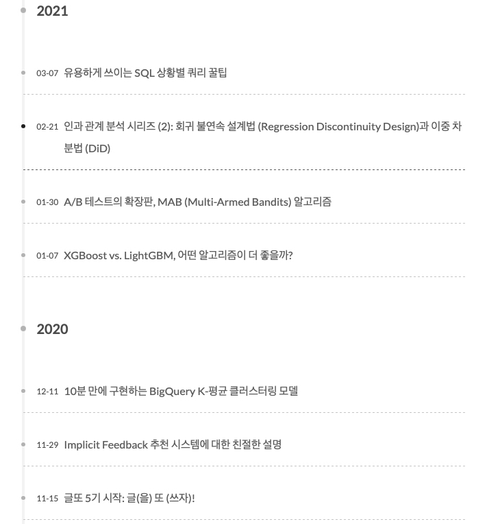
이번 기수에서 쓴 글: 7개
{:.figure}
위 사진과 같이 제가 이번 기수에서 글을 쓴 소재는 Implicit Feedback, 빅쿼리 및 SQL 쿼리, XGBoost, LightGBM과 같은 나무 모형, MAB 알고리즘, 인과관계 분석입니다. 이 소재들은 제가 이번 기수에 들어오기 전에 생각했던 주제들의 전부라 더 이상 “어떤 것을 공부해야할지” 막막한 상황입니다. 또한, 각각의 주제에 대해 모든 내용을 다뤘다고 말할 순 없지만, 해당 주제를 쓰기까지 기본적인 내용은 공부했기 때문에 나름의 목표를 달성한 셈입니다.
추가로 이번에 글을 쓰면서 남겨둔 두 소재가 있는데요.
Implicit Feedback에 대해 글을 썼을 땐 더 나아가 "추천 시스템 lightfm 이용 및 패키지 사용"을 쓰겠다고 하였고,
MAB 알고리즘에 대해 글을 썼을 떈 pymc3을 통해 MAB를 구현하고 주식 데이터에 적용하겠다고 마무리를 했던 기억이 있습니다.
하지만 이 두 주제들을 파기엔 시간이 많이 걸리다보니, 두 주제 모두 글을 완성하지 못한 채로 방치해두고 있는 상태입니다 :<
둘째, 대체용 소재를 쓰는 것에 대한 지루함
자, 그래도 글또는 2주마다 돌아오기 때문에 글을 어찌되었든 써야 합니다. 충분한 공부가 되지 않은 상태에서 글을 쓰기 싫다는 생각에 묵혀놨던 대체용 소재들을 끌어내서 글을 썼습니다. 그게 유용하게 쓰이는 SQL 상황별 쿼리 꿀팁 글에 해당합니다.
일을 하면서 적어놨던 메모를 바탕으로 이 글을 썼기 때문에 확실히 글을 쓰긴 수월했습니다. 단락만 잘 나눠주면 되고 큰 수고를 덜지 않아도 되었기 때문에 빠른 시간 내에 완성할 수 있었습니다.
문제점은 글을 쓰는 과정이 재밌지 않다는 점입니다. 공부를 하면서 썼던 내용들은 제가 공부한걸 정리하는 차원에서 힘들지만 남는게 있고 뿌듯한 느낌을 받았었는데, 이번에 쓴 글은 그런 느낌을 받을 수 없었습니다. 이 글 이후 2주가 지나 pass권을 세 번째로 사용하였는데 사실 이때도 대체용 소재로 SQL Index와 쿼리 튜닝에 대한 글을 쓰고 있었습니다. 쓰면서 아는 내용을 굳이 정리해서 쓴다고 생각하니 재미없고, 쓰기 싫다는 마음에 결국 포기하고 pass권을 쓰게 되었습니다 ㅜㅜ.
셋째, 주말까지 미루는 게으름
주말에 쓰면 나쁜 점이 있습니다. 바로 "하루만에 쓸 수 있는 글"을 낸다는 점입니다. 제 기준에 하루만에 쓸 수 있는 글은 앞서 말씀드렸던 대체용 소재를 바탕으로 한 글입니다. 그렇기 때문에 다시 대체용 소재를 쓰는 것에 대한 지루함으로 글럼프가 찾아오게 되죠.
또한 pass권을 자주 사용할 확률이 큽니다. 회사를 다니면서 평일에 잘 놀지는 않기 때문에 주말에 약속을 잡게 되고, 글쓰기보단 약속이 우선시되다 보니 주말까지 글쓰는 것을 미루게 되면 약속이 생겼을 때 자연스레 pass로 이어지죠.
지금까지 제 글럼프의 원인에 대해 살펴보았는데요. 제가 공부했던 인과관계로 그려보면 이렇게 그려볼 수 있습니다.
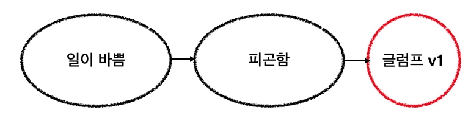
최초의 원인은 일이 바빠서, 피곤해서 글 쓸 시간이 부족했던 점입니다. 인과 관계가 심플하죠.
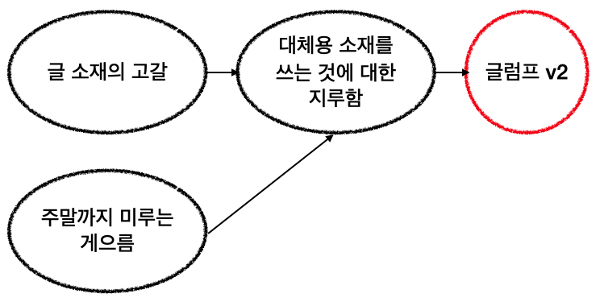
이에 비해 최근 들어 느끼는 글럼프는 이유도 다양하고 인과 관계도 약간 더 복잡해졌습니다.
글 소재가 고갈되다 보니 대체용 소재를 쓰게 되고, 이에 깊은 지루함을 느껴 글럼프를 겪게 됩니다.
또한, 주말까지 미루다보니 대체용 소재를 쓰고… 마찬가지로 글럼프로 이어지게 됩니다.
씁쓸하네요…
글럼프, 어떻게 극복할 것인가.
네. 이렇게 근황만 전하고 글이 끝나면 안됩니다. 어떻게 글럼프를 극복할지가 이 글의 **핵!심!**이죠.
여담이지만 예전에 고등학생 때로 돌아가보면 언어 모의고사에서 개요형 문제들이 종종 있었습니다 (구글링으로 마땅한 문제를 찾고 싶었으나 시대가 지나서일까요… 찾기 어렵네요ㅠㅠ). 제가 기억하기로 이 문제들은 어떤 주제에 대해 원인 및 결과, 문제점 및 해결 방법 등을 개요식으로 써놓고, 곳곳에 빈칸을 뚫어놓죠. 답을 찾는 방법은 원인에 맞는 결과, 문제점에 맞는 해결 방법을 짝짓기하여 푸는 방법이었던 것 같습니다.
이처럼 제 글럼프에 대한 해결 방법도 짝짓기와 연관이 있습니다. 쉽게 말해 제가 생각한 문제점에 대해 해결 방법을 짝짓기해보면 됩니다.
공부거리의 고갈 → 새로운 공부거리를 찾자
대체용 소재를 쓰는 것에 대한 지루함 → 잘 알고 있는 내용 (= 대체용 소재)에 대해 글쓰는 것을 지양하자
주말까지의 미루는 게으름 → 평일에도 틈틈이 쓰자
자세히 액션 아이템에 대해 써봅시다.
첫째, 새로운 공부거리를 찾자
공부거리의 고갈에 대한 해결책은 공부거리를 찾으면 되는 일입니다. 참 쉽죠?
{:.figure}
저는 성격상 진득함이 부족한 편입니다. 그래서 한 주제를 파고 나면 질리는 경우가 많습니다. 이게 큰 단점이긴 하지만, 한 주제에 질려 전전긍긍하면서 글또에 pass권을 쓰느니 새로운 주제로 환기하는 것이 더 낫다는 판단이 들었습니다.
결과적으로 미뤄둔 시리즈성 글 2개 (LightFM, MAB 활용편)은 “쓰고 싶을 때” 다시 찾으면 되고, 새로운 주제를 찾아 공부하고자 합니다. 제가 평소에 관심있게 본 분야를 최대한 많이 나열하고 재밌어 보이는 주제들을 차근차근 써보려 합니다.
정규식 관련 공부: 정규식을 가끔 R이나 SQL에서 쓰고 싶은 경우가 있는데 항상 패턴에 대한 이해가 부족하여 구글링에 의존하고 단기적으로 까먹는 경우가 많습니다. 그렇기 때문에 이를 정리해두면 어떨까? 생각이 들었습니다.
그로스 해킹 책 리뷰: 최근 글또에서 그로스 해킹에 대한 리뷰 글을 읽고 나서, 저도 관심을 갖게 되어 책을 사게 되었습니다. 조금씩 읽어가면서 지표들에 대해 이해하고 있는데 다 읽게 되면 이에 대한 리뷰도 하려 합니다.
시계열 분석 책 리뷰: 일에 접하면 시계열의 난제에 항상 부딪히곤 합니다. 시즈널한 이슈와 주말/주중의 특성 등 고려해야 제대로 된 분석 결과를 낼 수 있다 생각했습니다. 제가 공부하고 싶은 책은 올해 4월에 출시된 따끈따끈한 실전 시계열 데이터 분석입니다.
CasualImpact 패키지 파기: 인과관계 분석 방법론은 정말 많지만 언제 어떤걸 쓸까에 대한 고민이 수반됩니다. 그중에 아직 제대로 모르는 방법론이 있다면 CausalImpact 입니다. 이전에 SlideShare에서 이민호 분석가님의 A/B 테스트를 적용하기 어려울 때, 이벤트 효과 추정하기 (2020-01-18 잔디콘) 발표를 보면서 CausalImpact 방법론에 대해 알게 되었는데 직접 적용해보고 어떨 때 쓸 수 있는지, 어떻게 쓰는지 등 정리해보고 싶습니다.
퀀트 투자 포트폴리오 공부: 최근 투자에 관심이 있기 때문에 R을 이용한 퀀트 투자 포트폴리오 만들기 깃헙 블로그를 참고해서 공부한 내용을 정리해도 좋을 듯 합니다. 남자친구와의 내기로 4월까지 다 공부하면 10만 원 상당의 선물이 걸려있는데… 과연 다 해낼 수 있을까요?
책을 리뷰하려면 그래도 어느 정도 훑어봐야하기 때문에, 아마도 순서는 5→1→4→2→3이 될 듯 합니다. 또 없을까… 생각해봤는데 아직 생각나는건 이 정도네요. 틈틈이 공부하고 싶은 소재에 대해서 고민해보면 좋을 것 같습니다.
둘째, 대체용 소재에 대해 글 쓰는 것을 지양하자.
두 번째로 대체용 소재로 글을 쓰는 것에 대해 지양할 필요가 있다 느꼈습니다. 왜냐하면 대체용 소재도 처음에 접한 내용을 까먹지 않기 위해서 어딘가에 (예컨대, Notion) 정리해두었던 것이기 때문에, 이에 대해 다시 글을 쓰면 반복되는 업무라 생각이 들어 지겨운 마음이 들었습니다. 그렇기 때문에 첫번째 해결 방안에서 여러 공부거리들을 최대한 글에 녹여내면 해결될 문제라 생각합니다.
다만 대체용 소재라도 글이 잘 정리가 안 되어 있는 상태라면 그걸 다시 정리하는 것만으로도 괜찮을 것 같네요!
셋째, 평일에도 틈틈이 쓰자
글쓰기 위한 환경은 다 구비되었다!
{:.figure}
작년 12월부터 시작해서 이제 4개월 째 자취를 하고 있습니다. 처음에는 책상도 없고 맥북만 있었던 반면, 차츰차츰 책상, 키보드와 마우스, 모니터 등 사게 되면서 완전한 재택 세트를 구비하게 되었죠. 책상도 없을 땐 “글을 쓰면 뒷목이 뻐근해 글 쓰기 불편한 환경” 이어도 글을 꾸준히 썼던 반면 이제 그럴 핑계도 없습니다. 아주 글쓰기 좋은 환경이 되버렸죠 ㅋㅋㅋ
제가 앞서 글럼프라는 단어를 더 먼저 쓰신 분의 블로그를 언급했었는데, 이 분도 농담조로 글럼프가 오는 원인을 "배가 덜 고파서"라는 들었다는 얘기를 썼습니다. 아르바이트를 하고 주 7과목씩 수업을 들었을 때 지금보다 글을 더 많이 썼다고 말씀하시는데, 얼마나 아이러니한가 싶습니다.
제가 생각했을 때도 “배가 고픈 환경” (=글 쓰기 안 좋은 환경)에서는 어떻게든 카페에 가서 글을 쓰고 했지만, 배가 덜 고프니 (=재택 세트를 구비하고 나니) 의지가 박약해지는 느낌이 듭니다. 앞서 말한 원인과 결부되어 계속 주말로 글쓰기를 미루고 주말에서야 파바박 글을 쓰니 좋은 퀄리티의 글을 많이 못 썼던 것 같습니다.
이를 위해 제가 생각한 방안은 "밤 11시 전에 침대에 눕지 않기"입니다. 편도 1시간 30분씩 통근할 때보다 편안한 생활을 하다 보니 여가 시간도 더 많아졌는데 이를 잘 활용하고 있지 않다는 느낌을 받았습니다. 헬스를 하지만, 헬스 후엔 침대에 누워 핸드폰, 넷플릭스만 주구창창 보고 잠에 들곤 했죠…
이제 “밤 11시 전에 침대에 눕지 않기” 매일 글 쓰는 시간을 1시간 정도 분배하고, 그 외 여가 시간에는 운동, 책읽기, 주식 공부하기를 실천하고자 합니다. 뭐 정 안 되면 또 하나의 내기를 걸면 좋을 것 같네요. (TMI. 저는 의지박약형이기 때문에 내기에 의존하고 있습니다. 지금은 살찌는 음식 4개를 한 달간 먹지 않기 내기를 하고 있는 상태이죠 후후)
박제했으니 실천할 차례!
이제 이 글을 게시하면 저도 어쩔 수 없이 글을 잘 쓰지 않을까라는 희망이 있습니다. 마치 인스타그램에서 운동 인증을 매일 하는 사람처럼 제가 움직이기 위해서는 다른 사람들 (모르는 사람들이라도)의 시선이 조금 작용하는 것 같습니다.
저뿐 아니라 어떠한 이유로, 어느 시기에 글럼프는 겪을 수 있는 일이라 짐작이 듭니다. 그럴 때마다 마음을 다지고 반성 및 다짐을 하는 글을 쓰면 좋지 않을까요?
하게 됩니다. 그렇기 때문에 IP주소도 마찬가지로 테이블 주소처럼 사용할 수 있는 것입니다.
차집합 쿼리 NOT IN, OUTER JOIN, EXCEPT 비교
차집합을 사용하는 방법은 여러 가지가 존재하는데 어떤 쿼리가 가장 효율적일지에 대한 판단이 안 설 때가 있습니다. 이에 김정선님의 차집합 구하기, 어떤 쿼리가 좋을까? 글을 보고 쿼리별 성능 정보에 대해 자세히 이해할 수 있었습니다.
차집합이란 테이블 A에는 없는데 B에는 있는 정보를 구하고 싶을 때 사용합니다. 이에 쓸 수 있는 대표적인 쿼리는 NOT IN, OUTER JOIN, EXCEPT가 있고 이를 더 구체적으로 나누면 다음과 같습니다.
NOT IN
NOT IN + 상관 서브 쿼리
NOT IN + 상관 서브 쿼리 + TOP 1
상관 서브 쿼리 + TOP 1 + IS NULL
OUTER JOIN + IS NULL
EXCEPT + 서브 쿼리
해당 쿼리를 **Customer 테이블 (91행)**과 **Order 테이블 (830행)**로 설명하려 합니다. (아마도) Customer 테이블은 고객들의 정보를 담은 테이블이고, Order 테이블은 고객들의 주문 내역을 담은 테이블입니다. 그렇기 때문에 두 테이블 모두 고객들을 식별할 수 있는 식별자 (CustomerID)를 갖게 됩니다.
저희의 목적은 주문 내역이 없는 고객이 몇 명이나 되는지입니다. 그렇기 때문에 여러 차집합 쿼리를 통해서 Customer테이블에는 있으나 Order 테이블에는 없는 고객들 리스트를 확인하고자 합니다.
NOT IN
총평: Bad
NOT IN 쿼리는 가장 간단한 쿼리이지만 실행계획은 복잡합니다. Nested Loop 조인으로 인해 실제 I/O는 매우 많은 검색 수와 읽기 수를 보여주고 있으므로 성능이 좋지 않습니다.
참고로 SQL에서 조인을 수행할 때 실행 계획에 따라 크게 세 가지로 조인을 수행합니다. 각 조인에 따라 실행 속도가 크게 차이가 날 수 있기 때문에 쿼리를 최적화해 알맞은 조인을 선택하는 것이 중요합니다. 각 조인별 특징은 다음과 같습니다.
Nested Loop Join (NL Join)
좁은 범위에 유리한 성능을 보여줌
조인을 순차적으로 처리하며, 데이터에 랜덤하게 접근 (random access)
후행 테이블(Driven)에는 조인을 위한 인덱스 생성 필요
실행속도 = 선행 테이블 사이즈 * 후행 테이블 접근횟수
Merge Join (Sort Merge Join)
연결을 위해 데이터에 랜덤하게 액세스하지 않고 스캔을 하면서 수행
양쪽 테이블 처리 범위를 각자 접근해 정렬한 결과를 차례대로 스캔
마땅한 인덱스가 존재하지 않고 조인 연산자가 "="가 아닌 경우 NL 조인보다 유리
Hash Join
해싱 함수 기법을 활용해 조인을 수행
조인 대상이 되는 두 테이블 중에서 작은 테이블을 읽어 해시 영역에 해시 테이블을 생성하고 큰 집합을 읽어 해시 테이블을 탐색하면서 조인하는 방식
다만 해시 테이블을 생성하는 비용이 수반되기 때문에 해시 영역에 들어가는 테이블이 작을 때 효과적
NOT IN 을 이용한 쿼리는 다음과 같습니다.
1 2 3 4 5 6
select* from Customer where customerID NOTIN ( select customerID fromOrder )
NOT IN + 상관 서브 쿼리
총평: Not Bad
위의 서브 쿼리를 상관 서브 쿼리로 변경해 쿼리 상에서 직접적으로 Order 테이블과 Customer 테이블 간의 관계를 제한하였습니다. 여기서 상관 서브 쿼리는 바깥쪽 쿼리의 컬럼 중 하나가 안쪽 서브쿼리의 조건에 이용되는 처리 방식을 의미합니다. 그 결과, 조인 연산자를 Nested Loop 조인으로 선택했을 때 과도한 I/O를 해결하기 위한 대체 방안으로 Merge Join을 선택하게 됩니다. 그러나 Merge Join을 하기 위해서 인덱스 스캔을 하느라 전체 데이터를 액세스하고 있기 때문에 그렇게 좋다고 볼 순 없기 때문에 Not Bad! 입니다.
1 2 3 4 5 6 7 8
select* from Customer as c where customerID NOTIN ( --> NOT IN select customerID fromOrderas o where o.CustomerID = c.CustomerID --> 상관 서브 쿼리 )
NOT IN + 상관 서브 쿼리 + TOP 1
총평: Very Good!
아래 쿼리의 실행 계획을 확인해보면 내부 입력인 Order 테이블에 대해 Index Seek / Top / Filter의 연산자 순서를 거친 후에 Nested Loops 조인을 하게 됩니다.
이를 통해 반복적인 랜덤 I/O를 줄입니다. Merge Join에 비해 Nested Loop의 Stream 방식이 훨씬 응답 속도가 빠르기 때문에 필요한 데이터만 액세스하고 응답 속도도 빠르기 때문에 성능 상 우수한 쿼리입니다.
1 2 3 4 5 6 7
select* from Customer as c where customerID NOTIN ( select top 1 customerID --> top 1 fromOrderas o where o.CustomerID = c.customerID --> 상관 서브 쿼리 )
참고로 위 쿼리에서 NOT IN대신 NOT EXISTS를 사용하면 NL Join 대신 Merge Join으로 처리되지만, 전체 데이터를 조인으로 결합시키지 않고 결합에 필요한 데이터만 처리하게 됩니다. 결과적으로 NOT IN + 상관 서브 쿼리보다 약간 개선된 쿼리라 볼 수 있습니다.
1 2 3 4 5 6 7
select* from Customer as c where customerID NOTEXISTS ( select top 1 customerID --> top 1 fromOrderas o where o.CustomerID = c.customerID --> 상관 서브 쿼리 )
상관 서브 쿼리 + TOP 1 + IS NULL
총평: Very Good
해당 쿼리도 NOT IN + 상관 서브 쿼리 + TOP 1와 비슷하게 NL Join을 사용하고 Index Seek / Top 연산자를 이용해 검색 제한 조건을 처리할 수 있기 때문에 Very Good입니다.
다만 where절에서 CustomerID 컬럼을 명시하지 않아서 쿼리가 직관적이진 않은 것 같네요.
1 2 3 4 5 6 7
select* from Customer as c where ( select top 1 customerID fromOrderas o where o.CustomerID = c.CustomerID ) isnull
OUTER JOIN + IS NULL
총평: Very Bad!
해당 쿼리는 제가 자주 사용하던 가장 쉬운 쿼리인데요. Merge 조인으로 처리되어 I/O는 작지만 실행 계획을 보면 문제가 있음을 알 수 있습니다. 내부 입력에 해당하는 Order 테이블에서 조인 조건을 만족하는 830건을 모두 left join으로 결합하고, 그 결과 832건을 도출한 뒤에 마지막 filter 연산자에서 CustomerID is null 조건으로 실제 행 수인 두 건을 만족하게 됩니다.
결국 조인을 다 한 후에 where 절에서 null인 행만 필터링한다는 점에서 불필요한 데이터를 액세스하게 되기 때문에 좋은 쿼리라 볼 수 없습니다.
1 2 3 4 5
select c.* from Customer as C leftjoin Orders as O on c.CustomerID = o.CustomerID where o.CustomerID isnull
EXCEPT + 상관 서브 쿼리
총평: Not Good
수학적 개념인 차집합을 정확히 표현한 것이 EXCEPT 문입니다. 이 쿼리에서는 CustomerID만 select하고 있지만, 조인이나 서브쿼리로 실제 결과 집합으로 필요한 Customer 테이블의 다른 컬럼들을 처리해야 하기 떄문에 부가적인 I/O가 더해지기 때문에 성능은 Not Good입니다.
1 2 3 4 5
select CustomerID from Customer EXCEPT select CustomerID fromOrder
결과적으로 NOT IN + 상관 서브 쿼리 + TOP 1의 성능이 가장 좋으니, 성능 개선이 필요한 쿼리들이 있다면 이를 잘 활용해봐야겠습니다 😃
테이블 형태 바꾸기
엑셀에서 피벗 테이블 (Pivot table)을 사용하셨다면 테이블 형태를 변형하는 것에 대한 이해가 쉬울 것 같습니다. 피벗 테이블은 긴 형태로 된 테이블의 데이터를 요약하는 통계표입니다.
예를 들어, 아래 이미지에서 연도, 월에 따른 어떤 횟수를 담은 테이블이 있을 때, 이를 피벗 테이블로 만들면 우측 그림과 같습니다. 이렇게 피벗 테이블은 긴 테이블을 넓은 테이블로 요약하기 때문에 이해하기 쉽게 “Long To Wide” 테이블을 만드는 작업이라 하겠습니다. 이와 반대로 "Long to Wide"를 만드는 작업도 있겠죠? 이를 unpivot한다고 말합니다.
각각의 경우에 대해 SQL 쿼리로 어떻게 구현하는지 확인해봅시다.
Long to Wide (Pivot) 테이블 만들기
이를 쿼리로 구현하면 pivot 을 사용하고, 그 안에 min, avg, sum과 같은 그룹 함수를 사용해야 합니다. 기존의 select 절에 다음과 같이 추가합니다.
1 2 3 4 5
select* from #data pivot ( 그룹함수 (집계 컬럼) for 피벗 대상 컬럼 in (피벗 컬럼 값) ) as pvt
위 사진에서 피벗의 대상이 되는 컬럼은 연도이고, 피벗 컬럼 값은 2013과 2014입니다.또한 집계 컬럼은 횟수가 됩니다. 따라서 쿼리를 작성하면 다음과 같습니다.
1 2 3 4 5 6
select* from #data PIVOT ( -- 그룹함수 (집계 컬럼) for 피벗 대상 컬럼 in (피벗 컬럼 값) sum(횟수) for 연도 in ([2013],[2014]) ) as pvt
Wide to Long (Unpivot) 테이블 만들기
이를 반대로 pivot 형태로 요약되어 있는 컬럼을 Long하게 늘어뜨리는 경우 다음과 같이 쿼리를 작성합니다.
1 2 3 4 5 6 7
SELECT 월, 연도, 횟수 FROM ( SELECT 월, [2013], [2014] FROM pvt) p UNPIVOT (횟수 FOR 연도 IN ([2013],[2014]) )AS unpvt
저도 해당 쿼리를 외우진 못하지만 항상 어딘가에 저장해놓고 필요할 때마다 쓰고 있네요 ^^
데이터 분석가라면 한 번쯤 고민해 볼 인과 관계 (Causal relationship)와 상관 관계 (Correlation)의 차이에 대해 아시나요?
상관 관계는 "A의 발생이 B와 상관하고 있을 때"를, 인과 관계는 "A가 B의 원인일 때"를 의미합니다. 예를 들어 봅시다. PT를 받고 있는 헬린이 1,000명을 대상으로 조사했을 때, PT를 받은 횟수가 많을수록 살이 찌는 경향이 보임을 관측했습니다. 따라서 이들의 상관 계수를 구하니 0.8이라는 값을 구했다고 합시다. 그러면 PT를 받은 횟수와 3개월 후 몸무게는 양의 상관 관계가 있다고 말할 수가 있습니다. 참고로 상관 계수는 두 변수 간의 공분산을 각각의 표준편차로 나눈 값을 의미합니다.
그렇다면, 이 상관 계수를 통해 "PT가 살찌는 원인이다"라 단언할 수 있을까요? 직관적으로 아니라는 것을 아실겁니다.
먼저, 우리가 추정하고 싶은 인과 관계가 "PT 횟수에 따른 몸무게 변화"라 합시다. 이 때 PT 횟수는 전문 용어로 **처리 (Treatment)**라 하고, PT 횟수로 인해 순수하게 바뀌는 몸무게 변화를 **처리 효과 (Treatment Effect)**라 합니다. 그리고 원인이 되는 "PT 횟수"를 X, 결과를 "몸무게"를 Y라 칭합니다.
데이터 분석의 힘 책에 따르면, 이렇게 상관 관계가 인과 관계로 이어지지 않는 이유는 크게 두 가지입니다.
첫째, 다른 요인이 영향을 미쳤을 가능성이 있습니다.
Y가 변화한 이유에 X 이외의 다른 요인이 영향을 미쳤을 수 있습니다. 세상은 실험실처럼 여러 요인을 통제하기 어렵습니다. X가 벌어진 것과 같은 시기에 여러 가지 일이 일어날 수 있습니다. 예를 들어 PT를 하면서 근육량이 늘어나 몸무게가 증가할 수는 있지만, 최근 들어 재택 근무를 많이 하면서 활동량이 줄어 몸무게가 증가할 수도 있습니다. 즉, 재택을 많이 할수록 PT할 기회도 많아지고, 몸무게 증가에도 기여를 할 것입니다. 이렇게 "재택 근무 횟수"는 "PT 횟수"와 "몸무게"에 모두 영향을 주는 변수입니다 (이렇게 X와 Y에 모두 영향을 주는 변수를 V라 칭하겠습니다).
두 번째, 인과 관계가 반대일 가능성이 있습니다.
때로는 Y가 X에 영향을 주는 역 인과 관계의 가능성도 부정할 수 없습니다. 예를 들어 PT 사례에서 몸무게가 증가해서 PT를 더 많이 하는 경우, X → Y가 아닌 Y → X의 인과 관계가 성립하는 것입니다.
결과적으로 X와 Y에 상관 관계가 있을 경우 세 가지 가능성이 존재합니다.
X가 Y에 영향을 주었을 가능성
V가 X와 Y 양쪽에 영향을 주었을 가능성
Y가 X에 영향을 주었을 가능성
1번의 경우 X와 Y간의 상관 관계와 인과 관계가 모두 성립하지만, 2번이나 3번에서는 X와 Y간의 상관 관계만 보장이 됩니다.
인과 관계 분석을 위한 방법론
자, 상관 관계와 인과 관계가 다르다는 건 이해했습니다. 그럼 인과 관계를 파악하기 위해선 어떻게 분석해야 할까요?
가장 확실한 방법은 RCT (Randomized Clinical Trial)무작위 임상 실험입니다. RCT란 가능한 변수들을 최대한 고정하고 (통제하고) 처리만 변화시켜가면서 효과가 어떻게 바뀌는 지 실험하는 환경을 의미합니다 (의학 분야 외에서도 통제된 환경에 범용적으로 쓰이는 용어입니다!). 현대에서 이러한 유사 실험의 예는 A/B test입니다. RCT의 핵심은 관찰 그룹별로 나눌 떄 반드시 무작위로 나눠야한다는 점입니다. 예를 들어 A그룹에는 PT를 하지 않게 하고, B그룹에만 PT를 하게 해 실험할 경우, 동전을 던져 앞면이 나오면 A 그룹, 뒷면이 나오면 B 그룹으로 배정하는 “무작위” 방식이 필요합니다.
왜 무작위로 나누는 것이 중요할까요? 무작위로 집단을 나눌 경우 어느 정도 표본수가 확보되었을 때 두 집단은 통계적으로 동질한 집단이 되기 때문입니다. 이를테면 두 집단은 체중 변화에 영향을 줄 수 있는 성별 분포, 나이대, 본래의 체중과 같은 요인들의 분포가 비슷해집니다.
그러나 현실에서는 RCT를 실행할 수 없는 경우가 많습니다. 일단 RCT를 시행하려면 실험을 설계하고 끝날 때까지 비용, 시간, 노력이 많이 들고, 윤리적인 문제로 실험이 불가한 경우도 많습니다. 예를 들어 어떤 게임 회사에서 어떤 이벤트의 효과를 검증하는 분석이 필요하여 RCT를 시행한다 할 때, 어떤 유저에게는 이 이벤트를 보여주고, 어떤 유저에게는 보여주지 않는다면 게임 회사에 트럭이 몰려오겠죠 ㄷㄷ…
이렇게 RCT를 시행할 수 없는 환경을 관측 환경 (Observational Studies) 이라 합니다. 관측 환경 상에서 인과 관계를 추정하는 방법론은 성향 점수 매칭, 층화, RD 디자인, 이중차분법으로 크게 네 가지입니다.
저번 포스팅에서 살펴 봤던 성향 점수 매칭 (Propensity Score Matching)과 층화 (Stratification) 방법은 처리를 받은 집단과 받지 못한 집단 간의 특성이 비슷한데 처리를 무작위로 시행받지 못한 경우, 사용할 수 있는 방법입니다. 이 방법은 처리 집단 (Treatment Group)과 비처리 집단 (Control Group)의 밸런스를 맞춰주어 집단들의 특성들의 분포를 비슷하게 만들어주어서 그들의 평균 결과들을 비교 가능하도록 합니다.
처리 그룹과 비처리 그룹이 특정한 경계선 (cutoff)에 의해 나눠지는 경우, RD 디자인 (Regression Discontinuity Design)이 적합합니다. 경계선 부근에서 점프가 발생했다면 이걸 처리 효과라고 봅니다 (더 자세히 살펴보겠습니다).
마지막으로, 다른 특성을 가진 모집단들에 처리가 배정(assign)됐다면, 이중차분법 (DiD; Difference-in-differences) 방법이 여러 시점에 걸쳐 그룹들 간의 비교를 가능케 합니다.
RD 디자인 (Regression Discontinuity Design)
RD 디자인의 핵심은 **불연속 (discontinuity)**과 **경계선 (cutoff)**입니다. 여러 산업에서는 특정 경계선을 기준으로 전략을 세우는 경우가 많습니다. 예를 들어, 고객들의 월 구매 금액에 따라 회원 등급을 나누어 등급에 따라 혜택을 차등 적용하는 경우에 이런 RD 디자인을 적용할 수 있습니다. 이 경우에 불연속한 지점에서 국소적인 처리 효과를 찾아낼 수 있습니다.
위의 그림에서 x축은 경계선을 만드는 기준입니다. 이를 RD 디자인에서는 "running variable"이라 합니다. 만약 어떤 회사에서 고객들의 7월의 구매 금액 10만 원을 기준으로 제품 할인율을 차등 적용했을 때, 8월 (다음 달)의 구매 빈도에 미치는 영향을 분석한다 가정해봅시다. 이때 x축은 "고객들의 7월 구매 금액"에 해당합니다. 이를 위해 7월의 구매 금액이 10만원 이상인 고객에게는 8월 동안 전 상품 30% 할인율을 책정하였고, 10만 원 미만인 고객에게는 전 상품 10% 할인율을 책정했습니다. 이 때, "C"에 해당하는 초록색 점들은 대조 그룹 (Control group)으로, 10만 원 미만 구매한 고객을 의미하고, "T"에 해당하는 파란색 점은 처리 그룹 (Treatment group)으로 10만 원 이상 구매한 고객을 의미합니다.
회사 입장에서는 할인율을 30%로 책정한 고객 ( = 7월에 10만 원 이상 구매한 고객)들의 8월의 구매 빈도가 더 많아질 것이라 예상할 것입니다. 그럼 y축을 "8월의 구매 빈도"로 놓는 것입니다.
결국 이렇게 산점도를 그렸을 때, 두 가지 사실을 알 수 있습니다.
첫 번째는 7월의 구매 금액이 많을수록 8월의 구매 빈도가 높아지고 있다는 점입니다.
두 번째는 10만 원을 경계로 큰 **점프 (비연속적 변화, 불연속점)**가 보인다는 점입니다. 즉, 7월 동안 9만 9천원을 구매한 고객에 비해 10만 원을 구매한 고객의 8월 구매 빈도가 급상승함을 확인할 수 있습니다. 갑자기 10만 원을 구매한 고객의 8월 구매 빈도가 급증한 현상을 내부적 요인에서 찾을 수는 없습니다. 따라서 이렇게 된 요인에는 "할인율"을 차등 적용한 것이 가장 주요한 요인이겠죠. 결과적으로, 7월 구매 금액의 경계선인 "10만 원"을 기준으로 불연속한 모습을 보인다면 인과 효과를 추정할 수 있습니다.
RD 디자인의 가정
이렇게 인과 관계를 추정하려면 RD 디자인 가정을 만족해야 합니다.
RD 디자인 가정: 만약 경계선 (10만 원)에서 할인율이 변화하지 않는다면, 8월의 구매 빈도 (y)도 점프하지 않는다.
위 그림에서 보면, 점선으로 된 **가상 데이터 (Counterfactual)**가 경계선에서 할인율이 변화하지 않았을 때의 가상의 결과입니다. 만약 회사에서 할인율을 차등 적용하지 않고 모든 고객들에게 10% 할인율을 적용했을 때 가상 데이터처럼 8월의 구매 빈도가 10만 원을 기준으로 점프하지 않는다 가정했을 때, 이 RD 디자인을 적용할 수 있습니다.
그러면 이 가정이 성립하는지를 어떻게 검증할까요? 안타깝게도 불가능합니다. 이 사례에서는 인위적인 개입이 불가능하므로 할인율이 10%일 경우의 가상 데이터가 실제로는 존재하지 않습니다. 즉 RD 디자인의 가정은 점선으로 표시된 가상의 데이터에 기초하므로 데이터로 입증하는 것은 불가능합니다. 분석가는 다만 "아마 이 가정이 성립할 것"이라는 주장만 펼칠 수 있을 뿐입니다. 제가 이런 상황에 처했다면 과거의 데이터와 비교할 것 같습니다. 할인율을 10% 동일하게 적용했던 전년 동월의 데이터를 봤을 때 점프가 보이지 않는다면, 이 점프는 할인율로 인한 효과라 파악할 수 있는 것이죠.
RD 디자인 구현하기
이제 이 RD 디자인을 회귀 모형으로 설명해봅시다.
Yi=β0+β1Xi+β2I(Xi>=10만원)+ϵi
이 경우 β2의 값이 인과 효과라 볼 수 있습니다. R에서 이를 구현하려면 rdd 패키지를 이용할 수 있습니다.
먼저 이를 위한 시뮬레이션 데이터를 생성합니다.
x는 7월의 구매 금액으로 0부터 100만 원까지 균등 분포를 따르는 난수를 1,000개 생성했습니다.
y는 8월의 구매 빈도로, β1 = 0.0002, β2 = 10으로 설정하였습니다.
1 2 3 4 5 6 7 8
library(rdd)
x = runif(1000,0,1000000) y =3+.00002*x+10*(x>=100000)+rnorm(1000)
10만 원을 기준으로 그 미만의 8월 구매 빈도는 5번 정도 되는 반면, 그 이후의 구매 빈도는 15번 정도로, 그래프만 봐도 7월에 9만 9천 원 구매한 고객과 10만 원 구매한 고객의 8월의 구매 빈도가 10번 정도 차이가 있음을 확인할 수 있습니다. 이 10번은 국소적인 인과 효과 (local treatment effect)라 볼 수 있습니다. 국소적인 이유는 10만 원을 기준으로 안타깝게 그 기준을 만족하지 못한 고객 (ex. 9만 9천 원)과 딱 그 기준에 만족한 고객 (= 10만 원) 간의 8월 구매 빈도를 국소적으로 비교하고 있기 때문입니다.
이를 rdd 패키지의 RDestimate함수를 이용해 추정하면 다음과 같습니다.
여기서 cutpoint는 처리 그룹과 비처리 그룹을 나누는 경계선입니다. 이 경계선이 알려져 있는 경우 RD 디자인을 이용하기 때문에, cutpoint를 명시해야 합니다. 저희의 경계선은 10만 원을 경계로 할인율이 다르게 책정됐기 때문에 10만 원입니다.
bw는 bandwidth로, 국소적인 영역의 넓이입니다.
위 사진을 보면 bandwidth가 좁아질수록 탐색하는 데이터의 범위가 좁습니다. 저는 편의상 ±5만 원으로 두었습니다.
이때 rd의 summary 결과를 보면 LATE (Local Average Treatment Effect, 국소 평균 처리 효과)가 바로 RD 디자인으로 추정된 인과 효과입니다. Estimate을 보면 9.562로 추정되었습니다. 또한 Half-BW와 Double-BW는 각각 bandwidth을 절반으로 줄였을 때, 두 배로 늘렸을 때를 의미하고 Observations은 그 bandwidth 안에 들어온 관측치 수를 의미합니다.
Call: RDestimate(formula = y ~ x, cutpoint =1e+05, bw =50000)
Type: sharp
Estimates: Bandwidth Observations Estimate Std. Error z value Pr(>|z|) LATE 50000959.5620.378225.284.716e-141*** Half-BW 25000529.3480.423522.085.387e-108*** Double-BW 1000001909.6570.273835.281.300e-272*** --- Signif. codes:0'***'0.001'**'0.01'*'0.05'.'0.1' '1
F-statistics: F Num. DoF Denom. DoF p LATE 1013.03910 Half-BW 604.53480 Double-BW 2102.431860
RDEstimate 함수를 이용해 만든 객체 rd를 그리면 위 그림과 같이 나타납니다. 추정된 회귀 선을 그려주죠.
이중차분법 (Difference in Differences)
이중차분법은 같은 시간대의 같은 모집단 내의 처리와 비교 그룹을 비교하는 대신에, 처리와 비교 그룹의 시간에 따른 상대적 차이를 비교합니다.
자, 이제 그럼 RD 디자인은 격파! 했으니 이중 차분법을 알아봅시다. 성향 점수 기반 매칭이나 층화, RD 디자인 방법 모두 비교 대상을 처리 대상과 최대한 비슷하게 만들어서 한 시점에 한해 비교하는 방법들입니다. 예를 들어, 위 예시에서는 8월이라는 한 시점만 고려해서 구매 빈도를 비교했죠. 이에 비해 이중차분법은 한 시점에서의 유사성을 보는 것이 아니라 시간에 따라 어떻게 유사성이 변하는지를 보여줍니다. 즉, 같은 시간대의 같은 모집단 내의 처리와 비교 그룹을 비교하는 대신에, 이중차분법은 처리와 비교 그룹의 시간에 따른 상대적 차이를 비교합니다. 여러 집단에 대해 여러 기간에 걸쳐 수집한 데이터를 분석한다는 점에서 이중차분법은 "패널 데이터 분석"이라고도 불립니다. (데이터 분석의 힘 책에서는 이중차분법을 패널 데이터 분석법이라 칭하고 있습니다)
위 그림에서 x축은 시간에 해당합니다. 그리고 마찬가지로 C는 비교 그룹 (Control Group), T는 처리 그룹(Treatment Group)을 의미합니다. 시간에 따른 비교 그룹의 결과 평균값을 YC, 처리 그룹의 결과 평균값을 YT라 할 때 개입 효과 (인과 효과)는 다음과 같이 (처리 후의 그룹 간 평균 차이 - 처리 전의 처리 그룹 간 차이)로 추정됩니다.
이중차분법에는 **평형 트렌드 가정 (parallel trend assumption)**이 필요합니다.
이중차분법 가정: 만약 처리가 일어나지 않았다면 처리 집단의 평균값 (YT)과 비교 집단의 평균값 (YC)는 평행한 추이를 보인다.
평행 트렌드란 시간 변화에 따른 두 집단의 데이터 움직임이 평행을 이룬다는 의미입니다. 그래야만 "처리"의 영향력이 입증되기 때문입니다. 저희가 그린 그래프는 완벽하게 평행 트렌드 가정이 성립하는 경우입니다. 점선은 처리가 일어나지 않았을 경우 (할인율을 30%로 올리지 않았을 경우) YT의 움직임입니다. 그러나 RD 디자인과 마찬가지로 점선 부분은 처리가 일어나지 않았을 때의 가상의 상황이기 때문에 실제 데이터로 관측하는 것은 불가능합니다. 결과적으로 평행 트렌드 가정을 데이터로 입증할 수가 없으므로, 분석자는 가정이 성립할 것이라는 증거를 최대한 열거하는 수밖에 없습니다.
이를 위해 데이터 분석가가 제공할 수 있는 정보는 두 가지입니다.
첫째, 최소한 처리 이전의 시점에서 처리 집단과 비교 집단 사이에 평행 트렌드 가정이 성립하는지 조사해야 합니다. 물론 개입 전에 평행 트렌드 가정이 성립했더라도 개입 후에 어떤 일이 일어나 가정이 무너질 가능성이 있습니다. 그럼에도 개입 이전에 평행 트렌드 가정이 성립했다면 "이후에도 성립할 것"이라는 추정이 가능하기 때문에 조사합니다.
둘째, 개입 이후에 개입 집단에만 영향을 미친 다른 사건이나 변수가 없는지 확인해야 합니다. 예를 들어 월 10만 원 이상 고객에게 할인율을 30%로 제공했을 뿐만 아니라 PUSH 메시지를 통해 구매를 유도했다면 이 변수로 인해 인과 관계 추정을 어렵게 합니다.
이중차분법 구현하기
이제 이를 식으로 나타내봅시다.
먼저 평균 반응 값을 다음과 같이 정의합니다.
yˉT,A: 처리 이후의 처리 그룹의 평균 반응 값
yˉC,A: 처리 이후의 비교 그룹의 평균 반응 값
yˉT,B: 처리 이전의 처리 그룹의 평균 반응 값
yˉT,B: 처리 이전의 비교 그룹의 평균 반응 값
이때 DiD 추정값 δ는 이렇게 정의됩니다:
δ=(yˉT,A−yˉC,A)−(yˉT,B−yˉC,B)
i번째 고객에 대해서 t번째 시점에서의 구매 빈도를 yit, T를 처리 그룹, A를 처리 시점 이후인지 아닌지를 나타내는 indicator 변수라 할 때, DiD 모델을 회귀식으로 나타내면 다음과 같습니다.
Residuals: Min 1Q Median 3Q Max -9.768e+09-1.623e+091.167e+081.393e+096.807e+09
Coefficients: Estimate Std. Error t value Pr(>|t|) (Intercept)3.581e+087.382e+080.4850.6292 A 2.289e+099.530e+082.4020.0191* T1.776e+091.128e+091.5750.1200 A:T-2.520e+091.456e+09-1.7310.0882 . --- Signif. codes:0 ‘***’ 0.001 ‘**’ 0.01 ‘*’ 0.05 ‘.’ 0.1 ‘ ’ 1
Residual standard error:2.953e+09 on 66 degrees of freedom Multiple R-squared:0.08273, Adjusted R-squared:0.04104 F-statistic:1.984 on 3 and 66 DF, p-value:0.1249
연도와 처리 그룹 여부에 따라서 평균 y값을 산출하고 이에 따라서 데이터를 그렸을 때, 1994년을 기점으로 평균 y값이 감소하는 모습을 보입니다.
기업에선 위와 같이 항상 여러 가지 가능성을 열어두고 가장 좋은 선택이 무엇인지 고민하고 결정하는 의사 결정 과정을 거칩니다. 이에 대한 답을 얻는 가장 확실한 방법은
특정 기간 동안 고객마다 A, B, C안 중 랜덤하게 하나만 노출해서 가장 좋은 성과를 가지는 안을 선택하는 것입니다. 이것이 A/B 테스트의 기본적 컨셉입니다. 즉, A/B 테스트는 메뉴, 문구, 광고 등 고객마다 A안과 B안을 (내지는 C안까지) 다르게 보여주고 가장 반응이 좋은 안을 선택하는 방법입니다.
그러나 A/B 테스트에는 탐색(Exploration)과 활용 (Exploitation)의 문제가 존재합니다.
탐색 (Exploration)의 문제: “아 이럴 줄 알았으면 테스트 안 했지…”
테스트를 하면 할수록 기회 비용이 발생합니다.
예를 들어, 모 회사 직원 이모 씨는 배너에 A, B 문구 중 어떤 문구를 노출했을 때 매출액이 더 높은지 분석해달라는 요청을 받습니다. 이모 씨는 직관적으로 봤을 때 A 문구가 매출액이 높을 것이라 예상했지만, 이를 증명하기 위해 A/B 테스트를 시행했습니다. 고객들을 1:1 비율로 나누어 일주일 간 한 쪽은 A 문구만, 다른 한 쪽은 B 문구만 노출했습니다. 예상했듯이 A 문구가 매출액이 1,000만 원 더 높았습니다.
이 모씨는 테스트가 끝난 후 이런 생각을 하게 됩니다. "아, 이럴 줄 알았으면 테스트 안 했지… ". 테스트를 하지 않고 직관대로 처음부터 A 문구만 노출했다면 1,000만 원을 더 벌었을텐데 테스트를 하다보니 덜 벌었다 생각할 수 있는 것이죠.
활용(Exploitation)의 문제: “얼마나 더 해야 해?”
반대로, 테스트를 짧게 한다 해도 문제는 존재합니다.
앞에서 봤던 그 "이모 씨"는 시간이 없으니까 일주일만 A/B 테스트를 시행하라는 요청을 받습니다. 일주일 뒤에 결과를 봤더니 A안이 좋다는 결과가 나와 보고했더니 상사가 "이거 믿을 수 있는 결과야?"라 반박합니다. 이모씨는 할 말을 잃죠. (…)
이렇듯, 테스트를 짧게 하면 할수록 결과를 빨리 활용할 수 있기 때문에 더 많은 수익을 얻을 수 있지만, 통계라는게 표본이 작아질수록 결과의 신뢰성을 보장할 수 없습니다. 테스트 기간이 짧아지면 A안과 B안 중에 잘못된 안을 고를 수도 있습니다.
이를 방지하기 위해 테스트 기간은 “적당히” 길어야 합니다. 그러나 언제나 그렇듯 "적당히"의 기준은 주관적입니다. 대체적으로 실험 기간을 설정할 떄는 최소한의 비즈니스 사이클을 포함하도록 합니다. 주말의 매출이 크기 때문에 최소한 주말을 포함하도록 하고, 계절성을 고려해 테스트 기간을 정한다고는 하지만, 여전히 기간 설정에 따라 결과가 바뀔 수 있는 문제는 존재합니다.
이렇게 테스트에는 **탐색 - 활용 교환 (Exploration - Exploitation tradeoff)**이 존재합니다. **탐색 (Exploration)**은 가장 나은 대안을 찾기 위해 테스트하는 과정을 의미하고, **활용 (Exploitation)**은 테스트를 중단하고 결정된 대안을 선택하는 것을 의미합니다. 테스트를 많이 하면 많이 하는대로 기회 비용 문제가 발생하고, 안하면 안하는대로 신뢰성의 문제가 발생합니다. 이러한 문제를 체계화한 것이 MAB (Multi Armed Bandit) 문제입니다.
MAB가 왜 똑똑한가
MAB (Multi Armed Bandit)를 번역하면 "여러 팔 강도"입니다. 갑자기 웬 강도 (?)라 생각이 드실 수도 있지만, 이는 여러 대 슬롯 머신을 비유한 표현입니다.
영어에서 속어로 슬롯 머신을 “One Armed Bandit” (한 팔 강도)라 부르는데요. 실제로 구글링을 해보니 이런 슬롯 머신들이 검색이 되네요.
어감에서 느껴지듯이 슬롯머신이 오른 팔 하나만 가지고 도박객의 돈을 털어간다는 데에서 "한 팔 강도"라 표현한 것 같습니다.
다시 본론으로 돌아와서, MAB 알고리즘은 "Multi"이기 때문에 슬롯 머신이 여러 대 있는 상황입니다. 카지노에서는 슬롯 머신마다 돈을 따고 잃을 확률을 다르게 설정해둔다 합니다. 그럼 고객 입장에서 어떻게 하면 가장 높은 확률을 가진 슬롯머신을 택할 수 있을까요?
이에 대한 답에서도 "탐색-활용 교환"의 논리가 적용됩니다. 어느 슬롯머신의 수익률이 가장 좋은지 확인하려면 모든 슬롯 머신을 여러 번 당겨보면 되지만 그만큼 많은 돈이 필요합니다 (탐색). 이와 반대로 한 두 번씩만 당겨봐서 가장 수익률이 높은 슬롯머신을 택한다 해도 이게 가장 수익률이 높은 슬롯머신이라 단정하기 어렵습니다 (활용).
MAB가 똑똑한 이유는 이 탐색과 활용을 최적화하여, 매번 수익률이 높을 것으로 예상되는 슬롯머신을 선택해, 수익률을 극대화하기 때문입니다.
이런 MAB는 여러 분야에서 활용 가능합니다. 개인적으로 가장 와닿은건 "시간에 따라 수익률 프로파일이 달라지고 있는 상황에서 어떤 주식 옵션이 최고의 수익률을 줄 것인가?"인데요, MAB로 실제 주식의 이익을 최대화할 수 있다면 엄청나겠네요…해볼까
MAB에 쓰이는 용어
본론으로 들어가기 전에, MAB에 필요한 용어들을 정리해봅시다.
행동 (Action): MAB에서 선택된 대안 (ex. A/B 테스트에서 A안, B안)
보상 (Reward): 한 번의 행동에 따른 수치화된 결과 (ex. 클릭, 구매)
가치 (Value): 행동으로 인한 기대 보상
MAB에서는 모든 행동이 순서대로 발생한다 가정합니다. 그 순서에 따라 시점 t의 행동을 At라 하고, 행동에 따른 보상은 Rt로 표기합니다. 또한, 행동 a의 가치는 q∗(a), 시점 t에 추정된 가치는 Qt(a)라 씁니다.
MAB 알고리즘 중 가장 간단한 알고리즘은 그리디 알고리즘입니다. 예를 들어, 하루에 삼전, 네이비, 삼풍 주식을 샀는데 삼전에선 천원을 잃고, 네이비에서는 4천원을 벌고, 삼풍에서는 100만 원을 벌었다 가정합시다. 한 개미가 삼풍이 수익률이 가장 좋기 때문에 풀매수를 한다 할 때, 이 것이 바로 그리디 알고리즘의 컨셉입니다(이 예시는 실제 상황과 무관하며 지어낸 예시입니다 ^^;).
현재 시점 t까지 기대 보상 Qt(a), a= {삼전, 네이비, 삼풍}를 최대화하는 행동 At = 삼풍을 선택합니다. 이랬을 때 결과는 아시다시피, 떡락주식이 급락하는 것의 위험성을 배제할 수 없습니다. 이처럼 그리디 알고리즘은 탐색 (Exploration)을 충분히 하지 않고, 활용 (Exploitation)을 너무 많이 하는 알고리즘입니다.
이를 R로 구현하면 다음과 같습니다.
저희가 고려할 주식은 삼전, 네이비, 삼풍이고, 이 주식들의 모평균과 표준 편차를 다음과 같이 정의했습니다.
삼전은 하루에 평균적으로 4천원 이익을 가져다주고, 5천원의 표준편차를 가집니다.
네이비는 하루에 평균적으로 3천원의 이익을 가져다주고, 만 원의 표준편차를 가집니다.
삼풍은 하루에 평균적으로 2천원 손해인 주식이지만, 표준편차가 7만원이나 되기 때문에 기회를 잘 노리면 큰 수익을 얻을 수 있습니다.
# Greedy greedy =function(n_iter, actions, first, seed){ set.seed(seed) rewards = first$first_rewards counts = first$first_counts values = first$first_values # 탐욕 알고리즘------------------------------------------- for(t in2:n_iter){ best =names(which.max(values))#행동 = A_t R = rnorm (1, mean = mean[best], sd = sd[best])#R_t rewards[best]= rewards[best]+ R counts[best]= counts[best]+1 values[best]= rewards[best]/ counts[best]# 가치 계산 if(t%%10==0){ cat(paste0(t,"번째")) print(counts) t = t+1 } } return(list(counts = counts, rewards = rewards, values = values)) }
greedy(100, actions,first,seed=5)
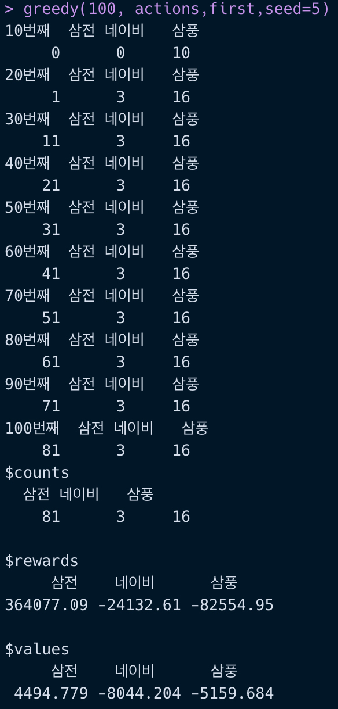
다음과 같이 100일 간 그리디 알고리즘을 적용하여 주식을 선택한다면, 삼풍을 16번까지 선택하고 나서야 손절하고, 삼전으로 갈아타는 것을 볼 수 있습니다.
결과적으로 보상 (rewards)의 총합은 삼전은 약 36만 원, 네이비는 -2.4만 원, 삼풍은 -8.2만 원이 되어 총 수익은 25만 4천 원을 벌었습니다.
일 평균 순이익 (= 기대 순이익) (values)은 삼전은 약 4,500원, 네이비는 - 8,000원, 삼풍은 -5,200원이 됩니다.
직관적으로 아, 이렇게 주식을 선택하면 안 되겠구나 싶죠. 이렇듯 그리디 알고리즘은 탐색을 충분히 하지 않고 활용하기 때문에 좋은 알고리즘이 아닙니다.
입실론-그리디 (Epsilon-Greedy) 알고리즘
10일 중 7일은 기대 수익이 가장 좋은 주식을 선택하고, 3일은 랜덤하게 선택!
입실론-그리디 알고리즘은 그리디 알고리즘에서 탐색을 촉진하기 위해 보완된 알고리즘입니다. 여기서 입실론 (epsilon)은 작은 수치를 나타내는 그리스 문자로, 무작위로 탐색활 확률을 의미합니다.
즉
for(t in2:n_iter){ best = ifelse(eps< runif(1),names(which.max(values)), sample(actions,1)) # 보상 업데이트 R = rnorm (1, mean = mean[best], sd = sd[best])#R_t rewards[best]= rewards[best]+ R counts[best]= counts[best]+1# 횟수 values[best]= rewards[best]/ counts[best]# 가치 계산 if(t%%10==0){ cat(paste0(t,"번째")) print(counts) } t = t+1 } return(list(counts = counts, rewards = rewards, values = values)) } eGreedy(100, actions, first,seed=5)
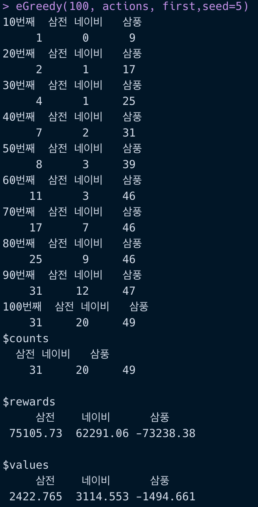
입실론-그리디 알고리즘을 사용하게 되면 삼풍 주식을 49번이나 구매하게 되네요. 생각보다 야수의 심장입니다. 결과적으로 얻는 수익은 6.4만 원 정도로 그리디 알고리즘을 사용할 때보다 낮습니다.
그 이유는 ϵ의 확률만큼 항상 무작위 탐색 (Exploration)을 해야 하기 때문에, 최적의 주식을 찾았더라도 시간이 지나면 최적 값과 멀어지는 결과를 초래할 수도 있기 때문입니다.
UCB (Upper-Confidence-Bound) 알고리즘
탐색과 활용을 적절하게 짬뽕!
입실론-그리디 알고리즘은 최적의 주식을 찾기 위해 랜덤하게 탐험합니다. 그러나 이 랜덤성으로 인해서 최적값과는 멀어지기도 하고 탐색을 과도하게 하는 문제가 있습니다.
예를 들어, 10개의 행동 중 2개가 최선의 산황이여도 입실론-그리디 알고리즘은 나머지 8개도 공평하게 탐색하기 때문에 과도하게 탐색하는 문제가 발생합니다.
이를 해결하기 위해 널리 쓰이는 방법 중 하나는 UCB (Upper-Confidence-Bound) 알고리즘입니다. 이 알고리즘의 아이디어는 추정된 가치 Qt(a)에서 일종의 신뢰 구간을 구해서 그 구간의 위쪽 신뢰 구간의 행동을 선택하는 것입니다. 수식으로 쓰면 다음과 같습니다.
At=argmaxa[Qt(a)+cNt(a)lnt]
t는 현재 시점, Nt(a)는 현재 시점까지 행동 a를 한 횟수입니다. (R 코드에서 count에 해당) 위 식의 형태를 보면 일반적으로 신뢰구간을 구하는 식 μ+cσ2/n에서 μ대신 Qt(a), σ2대신 lnt를 사용한 것만 다름을 알 수 있습니다.
여기서 상수 c는 신뢰구간 폭을 제어하는 파라미터로, c를 크게 하면 탐색을 많이 하게 되고 작게 하면 활용을 많이 하게 됩니다. 입실론-그리디 알고리즘에서 입실론이 크면 랜덤하게 탐색할 확률이 커지듯이 c도 값이 클수록 탐색을 많이 하게 됩니다.
또한 UCB에 들어가는 cNt(a)lnt항을 보면, Nt(a)를 분모에 두어 충분히 탐험되지 않은 행동에 가중치를 줍니다. Nt(a)가 작을수록 cNt(a)lnt)은 커지기 때문이죠!
결국 UCB 알고리즘에 들어가는 첫 번째 항 Qt(a)은 활용 (Exploitation)에 중점을 둔 항이고, 두 번째 항 cNt(a)lnt은 탐색 (Explotation)에 중점을 둔 항이기 때문에 UCB 알고리즘은 활용과 탐색을 적절히 고려해서 선택하는 알고리즘이라 할 수 있습니다.
set.seed(seed) rewards = first$first_rewards counts = first$first_counts values = first$first_values for(t in2:n_iter){ # UCB 알고리즘으로 행동을 선택한다 best =names(which.max(values + control *sqrt(log(t)/ counts))) # 보상 업데이트 R = rnorm (1, mean = mean[best], sd = sd[best])#R_t rewards[best]= rewards[best]+ R counts[best]= counts[best]+1 values[best]= rewards[best]/ counts[best]# 가치 계산 if(t%%10==0){ cat(paste0(t,"번째")) print(counts) } t = t+1 } return(list(counts = counts, rewards = rewards, values = values)) } UCB(100, actions,first,seed=5)
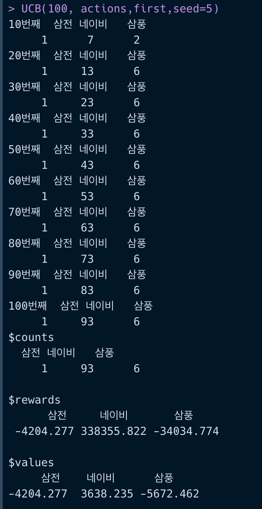
이 때의 결과로 약 30만 원의 이득을 보았네요! 가슴이 웅장해집니다. 그리디 알고리즘과 입실론-그리디 알고리즘과 달리 네이비를 93번이나 택했습니다.
톰슨 샘플링 (Thompson Sampling)
보상에 분포가 있는게 죄는 아니잖아!
톰슨 샘플링은 베이지안 방법으로, 위에서 봤던 알고리즘과는 약간 성격이 다릅니다. 베이지안 방식이기 때문에 관심 있는 모수(에 대해 사전 분포를 정의하고, 관측된 값으로부터 사후 분포를 이끌어냅니다.
톰슨 샘플링을 수도 코드 (pseudo code)를 보면 다음과 같습니다.
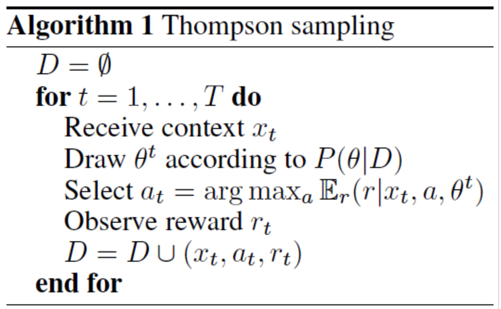
여기서
D는 관측된 값
θt는 관련 있는 모수들
xt는 당시의 상황 (행동별로 얼마나 선택되었는지에 대한 상황)
rt은 보상
at는 t번째 선택된 행동
을 의미합니다. 여기서 θt는 쉽게 얘기하면 앞서 말씀드린 삼전, 네이비, 삼풍 주식 수익에 대한 모평균과 모표준편차에 해당합니다. 실제 모평균과 모표준편차는 하나의 값으로 정해졌지만, 베이지안은 모평균과 모 표준편차가 하나의 분포 (=사전 분포)를 따른다고 가정하고 이를 데이터 (= 가능도)에 따라 모평균과 모표준편차에 대한 분포를 업데이트 (=사후 분포)하는 방식입니다.
말이 어려운데요. 이에 대한 예를 들자면, 만약 어떤 꼬마가 굉장히 낙천적인 아이여서 엄마가 아이스크림을 사주는 확률을 10번 중 9번 정도 꼴이라 생각하고 있다 가정합시다.
이를 분포로 생각하면 평균 0.9를 갖는 베타 분포입니다. (보통 확률에 대한 사전분포로 베타 분포를 고려하는데, 이는 베타 분포의 값이 항상 0과 1 사이에 있기 떄문입니다)
근데 엄마가 한 달 동안 단 한번도 꼬마에게 아이스크림을 안 사줬다고 가정했을 때, 꼬마는 계속해서 아이스크림을 사줄 확률을 0.9라고 인지하고 있을까요? 아마도 꼬마는 "엄마가 내가 충치가 생겼으니 아이스크림을 덜 사줄꺼야"라 생각하면서 확률을 0.2로 하향 조정할지도 모릅니다. 이렇게 엄마가 한 달 동안 한번도 아이스크림을 사주지 않았다는 것은 30일 간 관측된 값을 의미하고, 이를 함수로 표현하면 가능도 함수 (Likelihood function)이 됩니다. 이 가능도 함수는 이항 분포를 따릅니다.
마지막으로 아이가 확률을 하향조정한 것은 데이터를 관측한 후에 사전 분포를 업데이트하여 사후 분포를 만든 것과 같습니다. 업데이트된 사후 분포는 평균 0.2를 갖는 베타 분포가 되겠네요.
결과적으로 톰슨이라는 분은 이런 베이지안 원리를 MAB에 적용했다 볼 수 있습니다. 저희 주식의 상황으로 보면, 삼전, 네이비, 삼풍의 모평균과 모표준편차에 각각 적당한 분포를 가정하고 (= 사전 분포) 데이터를 받아 모평균과 모표준편차에 대해 업데이트 (=사후 분포)합니다. 이후에 기대 보상 (= 가치)을 최대화하는 행동을 선택하는데요.
제대로 하려면 모평균에 정규 분포, 모표준편차에 위샤트 분포를 가정해서 하는 것이 맞을 것 같으나, 이는 너무 복잡하기 떄문에 단순히 아이스크림 예시처럼 사전 분포를 베타분포로 가정합니다.
사전 분포에 아무런 정보를 두지 않기 위해서 Beta(1,1)을 가정하고, (= 이는 Uniform(0,1)와 같으므로 0과 1 사이의 랜덤한 값을 뽑는 것과 같습니다.)
여기서 삼전, 네이비, 삼풍 주식을 통해 보상을 얻을 확률을 위에서 세운 모평균과 모표준편차로 각각 1,000번 정규분포 난수를 뽑아서 0보다 클 확률로 두어 계산했습니다. 그 때의 확률값은 각각
삼전 = 0.798, 네이비 = 0.652, 삼풍 = 0.478입니다. 이 확률로 톰슨 샘플링을 하게 되면 다음과 같이 삼전 80번, 네이비 12번, 삼풍 8번의 결과를 얻게 됩니다.
마무리
각 알고리즘마다 주요하게 사는 주식이 다른게 흥미로운 것 같습니다.
개인적으로 톰슨 샘플링으로 그래서 얼마나 수익률을 가져왔는지 보여주지 못하는건 아쉬운데요.
그래서 다음번에는 실제 주식 데이터로 어떤 주식을 구매하면 좋을지 톰슨 샘플링을 이용한 MAB를 적용해보도록 하겠습니다. (아마도 ㅠㅠ)
XGBoost는 eXtra Gradient Boost의 준말로 GBM에서 파생된 트리 기반의 앙상블 학습 방법입니다. 이 방법은 캐글 대회에서 상위를 차지한 많은 참가자들이 XGBoost를 사용하면서 널리 알려졌습니다. XGBoost는 병렬 학습이 가능해 GBM 대비 학습 시간이 적게 걸리고, 과적합 규제 (Regularization), 나무 가지치기 (Tree pruning), 조기 중단 (Early Stopping) 특정 반복 횟수만큼 더 이상 비용함수가 감소하지 않으면 지정된 반속횟수를 다 완료하지 않고 수행을 종료하는 것과 같은 성능 향상에 필요한 기능들이 탑재되어 있습니다.
LightGBM도 마찬가지로 GBM 기반의 알고리즘이고, XGBoost와 GBM에 비해 훨씬 더 학습에 걸리는 시간이 적다는 점에서 장점을 가집니다. 또한 성능상 XGBoost와도 큰 차이가 없고, 기능상 다양성이 많다는 것도 장점입니다. LightGBM이 XGBoost보다 2년 후에 만들어지다 보니 XGBoost의 장점은 계승하고 단점은 보완하는 방식으로 개발됐다고 합니다.
따라서 이 포스팅에서는 XGBoost와 LightGBM을 파이썬의 사이킷런 (Scikit-liearn) API로 구현하고 이를 산탄데르 고객 예측 데이터에 적용해 어떤 알고리즘이 더 우수한지 판별해보고자 합니다.
사이킷런 (Scikit-liearn) API를 통한 XGBoost
XGBoost의 핵심 라이브러리는 C/C++로 작성되어 있습니다. XGBoost 개발 그룹은 파이썬에서도 XGBoost를 구동할 수 있도록 파이썬 패키지를 제공했습니다. 초기엔 사이킷런과 호환되지 않는 독자적인 XGBoost 전용 패키지였지만, 워낙 파이썬 사용자들이 사이킷런을 기반으로 머신러닝을 많이 이용하고 있기 때문에 XGBoost 개발 그룹은 사이킷런과 연동할 수 있는 API를 제공하기로 했습니다. XGBoost 패키지의 사이킷런 API는 XGBClassifier와 XGBRegressor입니다. 이를 이용하면 사이킷런이 학습을 위해 사용하는 fit()과 predict()과 같은 표준 사이킷런 명령어를 사용할 수 있습니다.
XGBoost 설치
이제 XGBoost를 pip3을 통해 설치해보겠습니다. mac에서 터미널 창을 열어 다음과 같이 명령어를 입력합니다.
1
pip3 install xgboost
설치가 완료되면 xgboost 모듈이 정상적으로 설치됐는지 검증합니다.
1 2
import xgboost as xgb # 파이썬 래퍼 from xgboost import XGBClassifier # 사이킷런 API
XGBoost의 하이퍼 파라미터
사이킷런 API 기준으로 하이퍼 파라미터를 설명드리겠습니다.
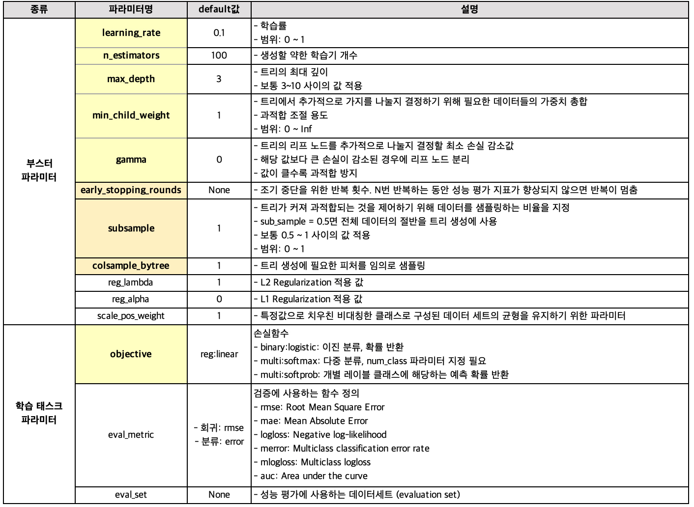
위 표에서 중요도 순으로 정렬하여 색을 다르게 표현했습니다. 즉, learning_rate, n_estimators, max_depth, min_child_weight, gamma의 중요도가 가장 높고, 이후에 early_stopping_rounds, subsample, colsample_bytree를 건드린다 합니다.
LightGBM을 파이썬에서 적용하는 방법을 알아보기 전에 "왜 LightGBM은 XGBoost나 GBM에 비해 더 빠른 시간 내에 학습할까"에 대한 답을 말씀드리고자 합니다. 이에 대한 답은 노드를 분할하는 방법에 있습니다.
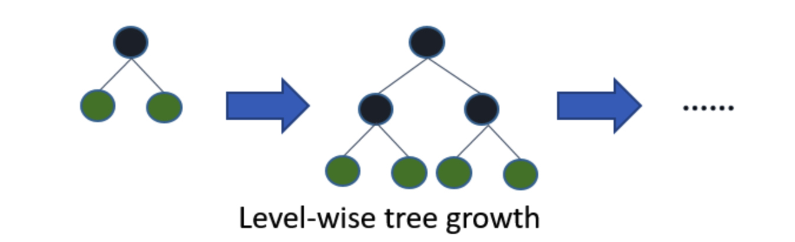
기존의 XGBoost나 GBM은 트리의 깊이를 효과적으로 줄이기 위한 균형 트리 분할 (Level-Wise)을 사용합니다. 최대한 균형 잡힌 트리를 유지하면서 분할하기 때문에 트리의 깊이가 최소화될 수 있습니다. 이러한 균형 잡힌 트리를 생성하는 이유는 과적합을 방지할 수 있다 알려져 있기 때문입니다. 그러나 균형을 맞추기 위한 시간이 오래 걸린다는 단점이 있습니다.
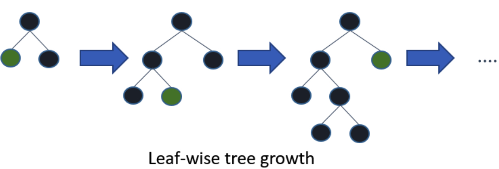
이에 비해 LightGBM의 리프 중심 분할 (Leaf-wise)은 트리의 균형을 맞추지 않고 최대 손실 값을 가지는 리프 노드를 지속적으로 분할하면서 트리의 깊이가 깊어지고 비대칭적인 트리가 생성됩니다. 결과적으로 균형 트리 분할에 비해 손실값이 높은 노드에 대해 더 깊게 트리를 분할하며 손실값을 줄일 수 있기 때문에 다른 부스팅 계열 알고리즘보다 더 좋은 정확도나 비슷한 수준의 성능을 낼 수 있습니다.
이번에는 캐글의 산탄데르 고객 만족 데이터 세트에 대해서 고객 만족 여부를 XGBoost와 LightGBM을 통해 예측해보겠습니다.
분석의 목적은 370개의 피처로 주어진 데이터 세트 기반에서 고객 만족 여부를 예측하는 것입니다. 클래스 레이블 명은 TARGET이고, 1이면 불만을 가진 고객, 0이면 만족한 고객을 의미합니다.
대부분 만족으로 응답한 고객이 많기 때문에 정확도 수치보단 ROC-AUC가 더 적합합니다. 따라서 평가 메트릭은 ROC-AUC로 하였습니다.
필요한 라이브러리
1 2 3 4 5 6 7 8 9 10 11 12 13 14 15
import numpy as np import pandas as pd import matplotlib.pyplot as plt import matplotlib import time # sklearn 관련 from sklearn.model_selection import train_test_split from sklearn.metrics import roc_auc_score from sklearn.model_selection import GridSearchCV # xgboost 관련 from xgboost import XGBClassifier from xgboost import plot_importance # lightgbm 관련 from lightgbm import LGBMClassifier from lightgbm import plot_importance
Grid Search 없이 약한 학습기 개수 (n_estimators)를 500, 조기 종료 반복 횟수 (early_stopping_rounds)를 100으로 했을 때 걸린 시간은 34초, ROC AUC는 0.8413입니다.
이제 이 성능을 높이기 위한 하이퍼 파라미터 튜닝을 시도해보았습니다. 칼럼 개수가 371개로 많은 편이기 때문에 과적합 방지를 위해 max_depth, min_child_weight, colsample_bytree 하이퍼 파라미터만 일차적으로 튜닝 대상으로 삼았습니다.
다음 예제 코드는 8개 (=23)의 하이퍼 파라미터의 경우의 수를 가집니다. 수행 시간이 꽤 오래 걸리므로 weak learner의 개수를 100개, fold의 개수를 3개로, early_stopping_rounds를 30으로 줄여서 테스트한 뒤 나중에 하이퍼 파라미터 튜닝이 완료되면 다시 바꾸고자 합니다.
이전에 하이퍼파라미터 튜닝 없이 얻은 ROC AUC 0.8413에 비해, 최적의 파라미터 {‘colsample_bytree’: 0.75, ‘max_depth’: 5, ‘min_child_weight’: 1}로 했을 때 0.002 정도 ROC AUC가 높아졌음을 볼 수 있습니다.
이제 앞에서 구한 최적의 파라미터를 기반으로 다른 하이퍼 파라미터를 변경 또는 추가해 다시 최적화를 진행해보겠습니다. 위에서 구한 최적의 하이퍼 파라미터를 {‘colsample_bytree’: 0.75, ‘max_depth’: 5, ‘min_child_weight’: 1}로 설정한 뒤, n_estimators = 1000으로 증가시키고, learning_rate = 0.02로 감소시키겠습니다. 그리고 reg_alpha = 0.03을 추가하였습니다.
결과적으로 XGBoost와 LightGBM의 성능과 소요 시간을 비교하면 다음과 같습니다.
구분
XGBoost ROC-AUC (소요 시간)
LightGBM ROC-AUC (소요 시간)
튜닝 X
0.8413 (31초)
0.8409 (1.8초)
튜닝 O
0.8450 (77초)
0.8406 (1.9초)
소수점 둘째 자리까지 ROC-AUC 값이 같을 정도로 XGBoost만큼 우수한 성능을 낸다는 점, 시간이 훨씬 절약되는 점을 고려했을 때 LightGBM이 완승이라 생각합니다.
실상은 agile하게 하이퍼 파라미터 튜닝 없이 LightGBM을 바로 적용할 것 같다는 생각이 드네요:> 실무에서도 쓰는 날까지!! 기대가 됩니다 후후
with hs as ( select h.start_station_name as station_name ,if (extract(dayofweek from h.start_date) =7or extract(dayofweek from h.start_date) =1, "weekend","weekday") as isweekday ,h.duration ,st_distance(st_geogpoint(s.longitude, s.latitude), st_geogpoint(-0.1, 51.5)) /1000as distance_from_city_center from `bigquery-public-data.london_bicycles.cycle_hire`as h join `bigquery-public-data.london_bicycles.cycle_stations`as s on h.start_station_id = s.id where h.start_date betweencast('2015-01-01 00:00:00'astimestamp) and cast('2016-01-01 00:00:00'astimestamp) ), stationstats as ( select station_name ,avg(duration) as duration ,count(duration) as num_trips ,max(distance_from_city_center) as distance_from_city_center from hs groupby station_name )
select* from stationstats orderby distance_from_city_center
이 쿼리를 쿼리 편집기 텍스트 영역에 입력하고 실행을 클릭합니다.
해당 쿼리는 크게 세 부분으로 나눌 수 있습니다.
임시 테이블 hs 만들기
임시 테이블 stationstats 만들기
stationstats 정보 불러오기
엄연히 말하면 with절 안에 쓰인 hs와 stationstats는 from절에 쓰일 서브 쿼리를 먼저 정의한 것인데,
쉽게 말하면 이 둘은 임시 테이블의 역할을 하고 있기 때문에 임시 테이블이라 하겠습니다.
즉 with hs as (쿼리1)로 쿼리 1의 실행 결과가 hs라는 임시 테이블에 저장되고, stationstats as (쿼리2) 쿼리 2의 실행 결과가 stationstats라는 임시 테이블에 저장되어서 이를 with절과 함께 쿼리를 실행하면 데이터를 조회할 수 있습니다.
만약 해당 방법을 사용하지 않고, 서브 쿼리 형태 그대로 코드를 짠다면 다음과 같을 것입니다.
select* from ( # 기존의 stationstats 부분 select station_name ,avg(duration) as duration ,count(duration) as num_trips ,max(distance_from_city_center) as distance_from_city_center from ( # 기존의 hs 테이블 부분 select h.start_station_name as station_name ,if (extract(dayofweek from h.start_date) =7orextract(dayofweek from h.start_date) =1, "weekend","weekday") as isweekday ,h.duration ,st_distance(st_geogpoint(s.longitude, s.latitude), st_geogpoint(-0.1, 51.5)) /1000as distance_from_city_center from `bigquery-public-data.london_bicycles.cycle_hire`as h join `bigquery-public-data.london_bicycles.cycle_stations`as s on h.start_station_id = s.id where h.start_date betweencast('2015-01-01 00:00:00'astimestamp) and cast('2016-01-01 00:00:00'astimestamp) ) groupby station_name ) orderby distance_from_city_center
위 코드는 이중 서브 쿼리 때문에 가독성이 떨어집니다. 그래서 with문을 이용해서 서브쿼리를 위에서 먼저 정의해주는 것이죠~!
자, 그럼 각 임시 테이블을 생성하는 쿼리에 대해 알아봅시다. 먼저 hs라는 테이블을 만드는 쿼리는 다음과 같습니다.
1 2 3 4 5 6 7 8 9 10 11 12
select h.start_station_name as station_name ,if (extract(dayofweek from h.start_date) =7or extract(dayofweek from h.start_date) =1, "weekend","weekday") as isweekday ,h.duration ,st_distance(st_geogpoint(s.longitude, s.latitude), st_geogpoint(-0.1, 51.5)) /1000as distance_from_city_center from `bigquery-public-data.london_bicycles.cycle_hire`as h join `bigquery-public-data.london_bicycles.cycle_stations`as s on h.start_station_id = s.id where h.start_date betweencast('2015-01-01 00:00:00'astimestamp) and cast('2016-01-01 00:00:00'astimestamp)
cycle_hire와 cycle_stations를 join 하는데 key가 되는 컬럼은 cycle_hire의 start_station_id와 cycle_stations의 id입니다. 여기서 조인의 형태는 내부 조인 (inner join)으로 inner 단어를 생략할 수 있다 하네요. 이렇게 조인해서 공통이 되는 정거장들의 대여 정보만 가져오게 됩니다.
또한 where 조건 절에 대여 시작일이 2015년 한 해인 것만 가져오도록 하고 있습니다.
hs의 컬럼 정보는 다음과 같습니다.
첫 번째 컬럼은 공통이 되는 정거장 이름 (station_name)입니다.
두 번째 컬럼은 주중/ 주말을 구분하는 isweekday라는 컬럼입니다. cycle_hire의 대여 시작 시간에서 요일을 추출해서 7 (토요일), 1 (일요일)의 값을 가지면 “weekend” (주말)라는 값을 갖고, 그 외 주중이라면 “weekday” (주중)이라는 값을 갖도록 합니다.
세 번째 컬럼은 cycle_hire의 대여 시간을 나타내는 duration 컬럼입니다.
네 번째 컬럼은 도시에서의 거리를 나타내는 distnace_from_city_center 컬럼인데요. 먼저 st_geogpoint(경도, 위도)라는 BigQuery의 지리 함수를 이용해서 해당 대여소의 위치를 반환해주고, st_geogpoint(-0.1, 51.5)라는 지점과 대여소 간의 거리를 계산해주는 st_distance (지역1, 지역2) 함수를 사용합니다. 이 함수는 두 지역 간의 최단 거리를 미터 단위로 계산해줍니다. 따라서 이를 1000으로 나눠서 킬로미터 단위로 만든 것이 해당 컬럼입니다. 여담으로 st_geogpoint(-0.1, 51.5)에 해당하는 지역이 어딜까 구글 지도에서 찍어보니 사우스워크 영국 런던라는 곳이 찍히네요!
이에 해당하는 쿼리만 실행하면 hs테이블의 형태를 볼 수 있습니다.
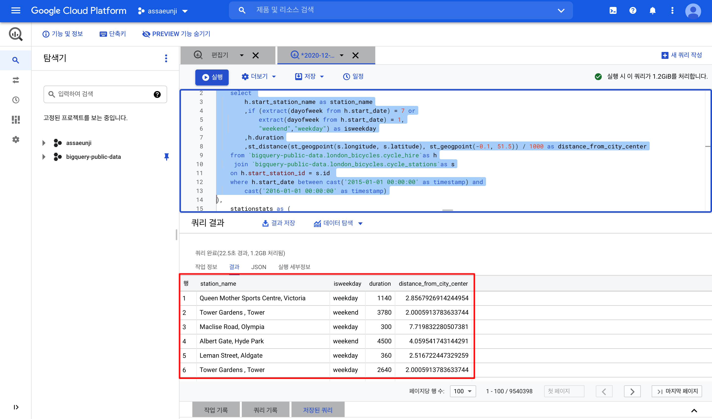
자, 그럼 hs에서 2015년 한 해 동안의 대여소 정보를 가져왔습니다. 대여를 할 때마다 행이 생성되기 때문에, 이를 대여소마다 한 행만 남도록 집계해주는 테이블이 필요합니다. 이를 stationstats라는 임시테이블에서 집계합니다.
1 2 3 4 5 6 7
select station_name ,avg(duration) as duration ,count(duration) as num_trips ,max(distance_from_city_center) as distance_from_city_center from hs groupby station_name
이 쿼리를 실행하면 hs가 저장된 테이블이 아니라 임시 테이블이다 보니 오류가 생깁니다. 따라서 위에서 소개한 쿼리 전체를 한꺼번에 돌려야 오류를 방지할 수 있습니다. 일단 편의를 위해 해당 쿼리로만 설명을 드리겠습니다.
hs 테이블에서 대여소 (station_name) 이름별로 group by를 합니다. 이를 통해 대여소마다 한 행만 남도록 집계할 수 있습니다.
두번째 컬럼 avg(duration)는 대여소 별 평균 대여 시간을 의미합니다.
세번째 컬럼 count(duration)는 대여소 별 1년 간 총 대여 횟수를 의미합니다.
두번째 컬럼 max(distance_from_city_center)는 대여소에서 시내에서 떨어진 거리의 최댓값입니다. 어차피 대여소의 위치와 도시의 위치는 정해져있으니 max를 쓰든 min을 쓰든 같은 값이 도출됩니다. 그럼 굳이 왜 max를 쓰느냐? group by 절에 지정하지 않은 컬럼을 출력하고 싶다면, 어떻게든 집계 함수를 통해 표현해야하기 때문입니다.
이렇게 도출된 테이블은 다음과 같습니다.
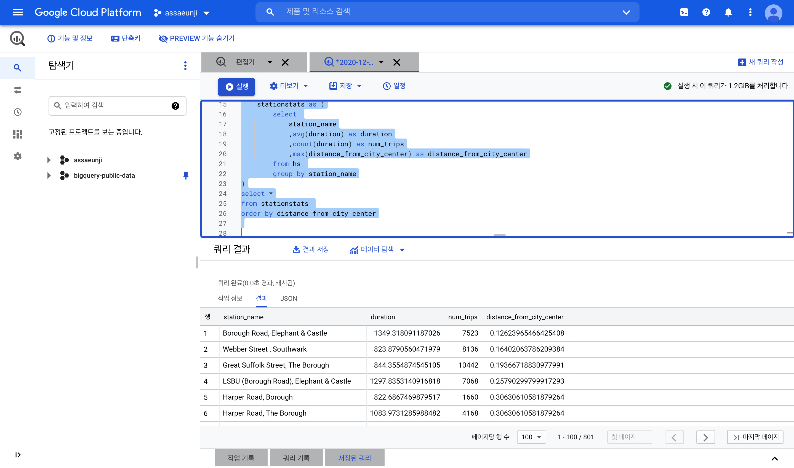
k-평균 모델 만들기
이제 데이터를 살펴봤으니 다음 단계는 k-평균 모델을 만드는 것입니다.
create model 문을 model_type = 'kmeans’라는 옵션과 함께 사용해 k-평균 모델을 만들고 학습시킬 수 있습니다. 다음 쿼리는 create model` 문을 이전 쿼리에 추가하고 데이터에서 id 필드를 삭제합니다.
createor replace model bqml_tutorial.london_station_clusters OPTIONS(model_type='kmeans',num_clusters=4) as with hs as ( select h.start_station_name as station_name ,if (extract(dayofweek from h.start_date) =7or extract(dayofweek from h.start_date) =1, "weekend","weekday") as isweekday ,h.duration ,st_distance(st_geogpoint(s.longitude, s.latitude), st_geogpoint(-0.1, 51.5)) /1000as distance_from_city_center from `bigquery-public-data.london_bicycles.cycle_hire`as h join `bigquery-public-data.london_bicycles.cycle_stations`as s on h.start_station_id = s.id where h.start_date betweencast('2015-01-01 00:00:00'astimestamp) and cast('2016-01-01 00:00:00'astimestamp) ), stationstats as ( select station_name , isweekday ,avg(duration) as duration ,count(duration) as num_trips ,max(distance_from_city_center) as distance_from_city_center from hs groupby station_name, isweekday ) select*except(station_name, isweekday) from stationstats orderby distance_from_city_center
이전 쿼리와 위 쿼리가 다른 부분은 두 가지입니다.
먼저, 이전 쿼리 위에 k-평균 모델을 생성하는 문을 넣었습니다.
모델을 저장하는 곳은 모델 저장할 데이터세트 만들기파트에서 만들었던 bqml_tutorial 데이터 세트입니다. 여기에 london_station_clusters라는 이름으로 모델 결과가 저장됩니다.
1 2
createor replace model bqml_tutorial.london_station_clusters options (model_type='kmeans',num_clusters=4) as
두번째로 stationstats를 정의할 때 group by 절에 isweekday라는 변수를 넣고, select 절에 except (station_name, isweekday)를 추가했습니다.
이렇게 한 이유는 추측상 일단 주중/ 주말마다 대여 시간이나 횟수가 차이가 나기 때문에 정거장 & 주중/주말 별로 어떻게 클러스터링이 되는지를 보고자 한 것 같습니다.
또한 except(컬럼명)을 쓰면 해당 컬럼만 제외하고 불러오는 것을 의미합니다. k-평균에 들어갈 변수는 3개 (duration, num_trips, distance_from_city_center)이기 때문에 이 station_name, isweekday 두 컬럼은 제외하고 불러오는 것입니다.
쿼리가 완료되면 다음과 같은 안내문이 뜹니다. 그럼 옆의 모델로 이동버튼을 클릭해봅니다.
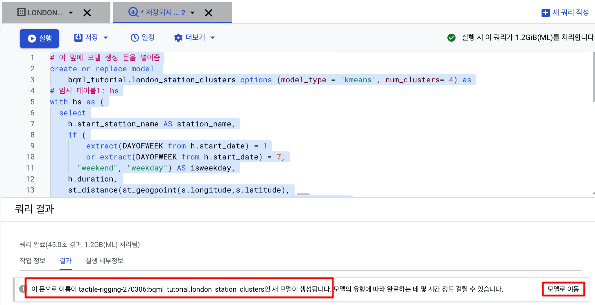
그러면 bqml_tutorial데이터 세트에 생성한 london_station_clusters 모델에 대한 세부 정보를 볼 수 있습니다.
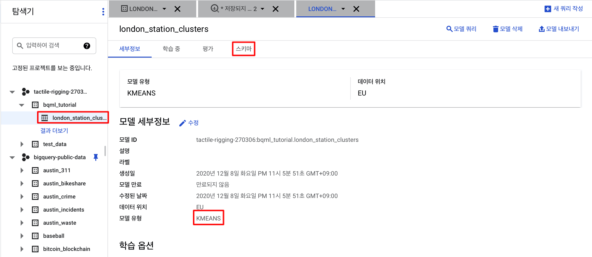
위와 같이 스키마를 클릭하면 duration, num_trips, distance_from_city_center의 컬럼을 가지고 모형을 수행했을을 알 수 있습니다.
평가를 클릭하면 k-평균 모델로 식별된 클러스터가 시각화되어 표시됩니다.
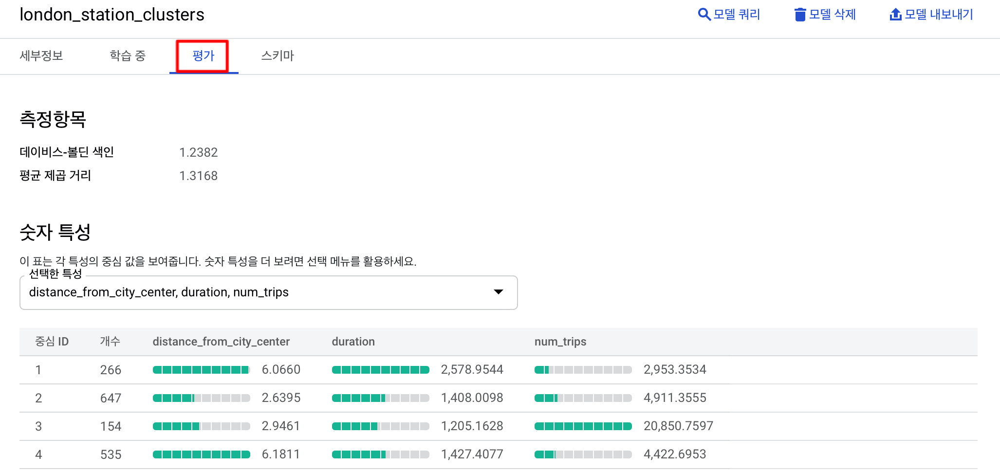
create model문에 num_clusters를 4개로 두었기 때문에 4개의 centroid (중심)을 가진 클러스터가 나왔고, 이 클러스터 각각에 대한 정보를 확인하실 수 있습니다.
## 모델 평가하기 with hs as ( select h.start_station_name as station_name ,if (extract(dayofweek from h.start_date) =7or extract(dayofweek from h.start_date) =1, "weekend","weekday") as isweekday ,h.duration ,st_distance(st_geogpoint(s.longitude, s.latitude), st_geogpoint(-0.1, 51.5)) /1000as distance_from_city_center from `bigquery-public-data.london_bicycles.cycle_hire`as h join `bigquery-public-data.london_bicycles.cycle_stations`as s on h.start_station_id = s.id where h.start_date betweencast('2015-01-01 00:00:00'astimestamp) and cast('2016-01-01 00:00:00'astimestamp) ), stationstats as ( select station_name , isweekday ,avg(duration) as duration ,count(duration) as num_trips ,max(distance_from_city_center) as distance_from_city_center from hs groupby station_name, isweekday ) select*except(nearest_centroids_distance) from ml.predict( model bqml_tutorial.london_station_clusters, ( select* from stationstats )
위에서 ml.predict 함수는 두 개의 변수를 갖습니다.
첫 번째는 생성한 모델
두 번째는 예측 대상 데이터입니다.
except(nearest_centroids_distance)를 적어주지 않으면 다음과 같이 각 4개의 centroid로부터 해당 데이터까지의 거리를 모두 계산해줍니다.
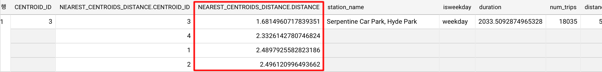
따라서 예측한 클러스터만 보기 위해서 except(nearest_centroids_distance)를 적어주면 최종 결과는 다음과 같습니다.
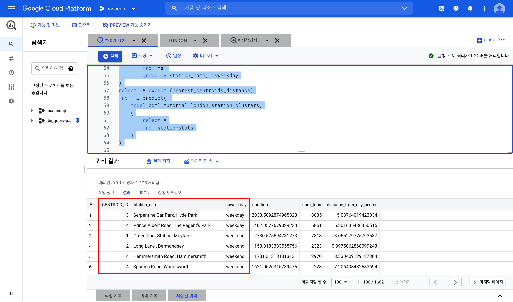
각 대여소마다 어떤 클러스터에 속해있는지를 centroid_id를 통해 알 수 있습니다.
모델을 사용해 데이터에 근거한 의사 결정 내리기
자 다시 이 그림을 봅시다.
클러스터 #1은 도심에서 멀고, 평균 대여 시간도 긴 대여소를 보여줍니다.
클러스터 #2도 도심에서 가깝지만, 상대적으로 덜 혼잡한 교외 대여소입니다.
클러스터 #3은 대여 횟수가 압도적으로 많고, 도시에서 가까운 인기 있는 대여소입니다.
클러스터 #4는 도심에서 멀지만 클러스터 #1에 비해 대여 시간이 짧습니다.
이러한 결과를 바탕으로 데이터를 사용해 정보에 근거한 의사결정을 내릴 수 있습니다. 예를 들면
일부 정거장에 경주용 자전거를 비치하는 경우를 가정해보겠습니다. 클러스터 #1이 도심에서 멀리 떨어져 있어 운행 거리가 가장 긴 대여소 그룹이기 때문에 경주용 자전거를 위한 후보지로 적합할 수 있습니다.
런던 도심의 자전거 대여 패턴을 분석하는 경우, 도심과 가깝고 대여 횟수도 많은 클러스터 #3에 속한 정거장을 먼저 분석해볼 수도 있습니다.
삭제
이 가이드에서 사용한 리소스 비용이 GCP 계정에 청구되지 않도록 데이터세트를 삭제하는 것이 좋습니다.
이를 위해 다시 탐색기에 들어가 해당 데이터세트를 클릭하고 우측에 있는 데이터세트 삭제를 클릭하면 데이터가 삭제됩니다.
이 글은 Jesse님의 허락을 받고 A Gentle Introduction to Recommender Systems with Implicit Feedback [link]을 번역한 글입니다.
추천 시스템 소개
추천 시스템은 소셜 네트워크, 엔터테인먼트 산업 등 다양한 산업에서 매우 중요합니다. 당신이 선호할만한 곡을 추천하는 것부터, 읽을만한 책을 추천하고, 입을만한 옷을 추천하는 것까지 추천 시스템은 고객들에게 제품을 더 쉽게 선택할 수 있도록 도와주고 있습니다.
의사결정에 도움을 주는 추천 시스템은 왜 그리 중요할까요? 한 논문은 이틀간 잼 가판대에 관한 실험을 진행했습니다. 한 가판대는 24개의 잼 종류가 있는 반면 두 번째 가판대는 6개만 잼이 놓여져 있었습니다. 24개의 종류를 가진 가판대에서는 3%의 고객들만이 구매한 반면, 6개의 종류를 가진 가판대는 30%의 고객들이 구매를 결정했다 합니다. 거의 10배에 가깝게 구매가 증가한 것이죠!
특히 온라인 쇼핑몰에서 추천 시스템은 선택 범위를 좁혀주기 때문에 매우 큰 효과를 가집니다. 과거 Netflix에 종사하다 Quora에 재직 중인 Xavier Amatriain는 2014년에 카네기 멜론 대학에서 추천 시스템에 대한 강연을 했는데요. 그가 소개한 추천 시스템에 대한 주요 통계 자료는 다음과 같습니다.
넷플릭스에서는 고객들이 본 영화 중 2/3는 추천된 영화입니다.
구글에서는 뉴스 추천으로 CTR을 38%나 향상시켰습니다.
아마존에서는 구매의 35%가 추천으로부터 나옵니다.
이와 더불어 Hulu에서는 단순하게 가장 인기있는 상품을 추천했던 것보다 추천 시스템을 이용한 결과, CTR이 3배 이상 증가했다 보고했습니다. 잘만 활용한다면 추천 시스템은 기업에게 큰 도움을 줄 수 있습니다.
자, 그럼 고객 정보와 아이템에 대해 충분한 정보가 있다 가정하고 추천 시스템을 구축한다 해봅시다. 어떻게 구축할 수 있을까요? 구축하기 위해서는 다음과 같은 요인들을 고려해야 합니다.
유저와 아이템에 대한 데이터의 종류
scale 능력
추천의 투명성
이 포스트에서는 위의 세 가지 요인들에 대해 다루고, 고려할 요인에 필요한 기본적인 방법론에 대해 정리하고자 합니다.
콘텐츠 기반 추천 (Pandora)
스트리밍 뮤직 기업인 Pandora에서는 음악 게놈 프로젝트의 일환으로 자신들이 갖고 있는 음악들의 고유한 특징들을 추출하기로 결정했습니다. 대부분의 곡은 450개 남짓한 특징을 가진 특징 벡터 (feature vector)에 기반하고 있습니다. 이러한 특징들로 추천 시스템을 이진 분류 (binary classification) 문제로 치환해 모형을 구축할 수 있습니다. 즉, 특정한 유저의 플레이리스트를 바탕으로 훈련 데이터를 만들어서 그 유저가 특정한 노래를 좋아할 확률을 추정할 수 있도록 전통적인 머신러닝 방법들을 사용할 수가 있는거죠. 즉, 콘텐츠 기반 추천은 좋아할 확률이 가장 높은 곡들로 추천하게 됩니다.
그러나 대부분의 회사들은 제품의 특징에 대한 데이터를 따로 갖고 있지 않습니다. Pandora도 곡들의 특징을 추출하기까지 여러 해가 걸렸다고 합니다. 이런 한계로 인해 콘텐츠 기반 추천은 최우선 순위가 아닐 수 있습니다.
인구 통계 (Demographic) 기반 추천 (Facebook)
만약 Facebook이나 LinkedIn처럼 유저에 대한 인구 통계학 정보가 많다면, 비슷한 유저나 그들의 과거 행동에 기반해서 추천을 할 수 있습니다. 콘텐츠 기반 방법과 유사하게 유저들의 고유한 특징 벡터를 뽑아내고, 특정한 아이템을 좋아할 확률을 예측할 수 있는 모델을 만들 수 있습니다.
그러나, 이 또한 유저들에 대한 정보가 많이 필요하기 때문에 콘텐츠 기반 추천과 마찬가지로 쉽지 않은 선택입니다. 따라서, 만약에 아이템과 유저에 기반한 자세한 정보에 대해 신경쓰고 싶지 않다면, 협업 필터링이 강력하고 효율적인 방법이 될 수 있습니다.
협업 필터링 (Collaborative Filtering)
협업 필터링은 유저와 아이템간의 관계만 사용하고, 그 자체의 정보에 대해서는 사용하지 않습니다. 필요한 정보는 각 유저와 아이템 간 상호작용 (interaction)으로 인해 나온 평점입니다. 참고로 추천 시스템에서 상호작용은 유저가 특정한 아이템에 평점을 남기거나 구매하는 행위를 의미하고 피드백 (feedback)이라고도 불립니다. 이러한 상호작용은 명시적(explicit), 암시적(implicit) 상호작용으로 나눌 수 있습니다.
명시적 (Explicit): 점수, 평점, 좋아요와 같이 명시적으로 점수를 매긴 것
암시적 (Implicit): 클릭, 노출, 구매로 추정할 수 있는 선호도로, 명시적 상호작용만큼 명확하지 않음
가장 쉬운 예시는 숫자로 매길 수 있는 영화 평점입니다. 우리는 평점을 통해 유저가 영화를 즐겼는지를 알 수 있습니다. 이런 평점 데이터는 명시적 상호작용이라 할 수 있습니다.
그러나, 대부분 사람들은 평점을 전혀 남기지 않는다는 문제가 있습니다! 따라서, 사용가능한 데이터가 매우 희귀합니다. 그 대신 Netflix는 최소한 유저가 어떤 콘텐츠를 시청했는지의 정보를 얻을 수 있습니다. 이런 시청 정보에 대한 데이터는 암시적 상호작용입니다. 그러나, 이 유저가 특정 프로그램을 시청했다고 해서 그 프로그램을 좋아한다고 말하기 어렵습니다. 따라서, 명시적 상호작용에 비해 암시적 상호작용은 어떤 콘텐츠를 선호하는지 추천하는 일이 더 어려운 일입니다.
이런 단점에도 불구하고, 암시적 피드백은 중요합니다. Hulu라는 회사에서는 추천 시스템에 대한 기사에서 다음과 같이 언급합니다.
Hulu에서의 암시적 데이터의 양은 명시적 피드백의 양을 압도하기 때문에, 우리의 추천 시스템은 암시적 피드백 데이터를 갖고 우선적으로 설계되어야 한다.
더 많은 데이터가 더 좋은 모형을 의미하기 때문에, 암시적 피드백 데이터를 구축하는데 힘써야한다는 것입니다. 암시적 피드백 데이터를 이용한 협업 필터링에는 많은 방법들이 있지만, 이 글에서는 Spark의 implicit 라이브러리에서 쓰는 방법인 ALS (Alternative Least Squares)에 대해 서술하겠습니다.
ALS (Alternative Least Squares)
ALS은 암시적 피드백 데이터를 협업 필터링을 통해 추천 시스템을 구현하기 위한 알고리즘입니다.
본격적으로 예시에 들어가기 전에, 이 방법이 어떻게 작동하는지 직관적으로 설명하고 왜 스파크에서 유일하게 선택되었는지 설명하고자 합니다. 앞에서 협업 필터링은 유저나 아이템에 대한 정보를 전혀 이용하지 않는다고 말했습니다. 그러면 어떻게 유저와 아이템이 서로 연관있다고 정의할 수 있을까요?
정답은 **행렬 분해 (Matrix Factorization)**입니다. 행렬 분해는 차원 축소 (관련한 정보는 남기되 피처의 개수를 줄이고 싶을 때)에서 자주 사용되는 방법입니다. 이는 주성분 분석PCA; Principal Component Analysis과 고유값 분해 SVD; Singular Value Decomposition과 일맥상통하죠.
ALS의 행렬 분해의 핵심은
매우 큰 유저-아이템 행렬로부터
숨겨진 피처들을 뽑아내서
이들을 훨씬 작은 유저들의 특징을 담은 행렬과 아이템 특징을 담은 행렬로 분해하는 것입니다.
아래 사진에서 보듯이, 행렬 R은 M×N 행렬입니다. M은 유저 수, N은 아이템 수를 의미합니다. 이 행렬은 매우 희소 (sparse)한데, 유저들이 몇 개들의 아이템과 상호작용했기 때문입니다. 이 R 행렬을 두 개의 작은 행렬로 분해할 수 있습니다: (1) 한 행렬은 M×K차원을 가진 각 유저의 특징들을 담은 잠재 유저 행렬U이고, (2) 두 번째 행렬은 K×N행렬을 가진 아이템들의 특징을 담은 잠재 아이템 행렬V입니다. 이 두 행렬을 곱하면 원본 행렬 R과 유사한 값을 내지만, 두 행렬은 원본 행렬과 달리 아이템과 유저에 대한 K개의 잠재적 특징을 가진 빽빽한 (dense) 행렬입니다.
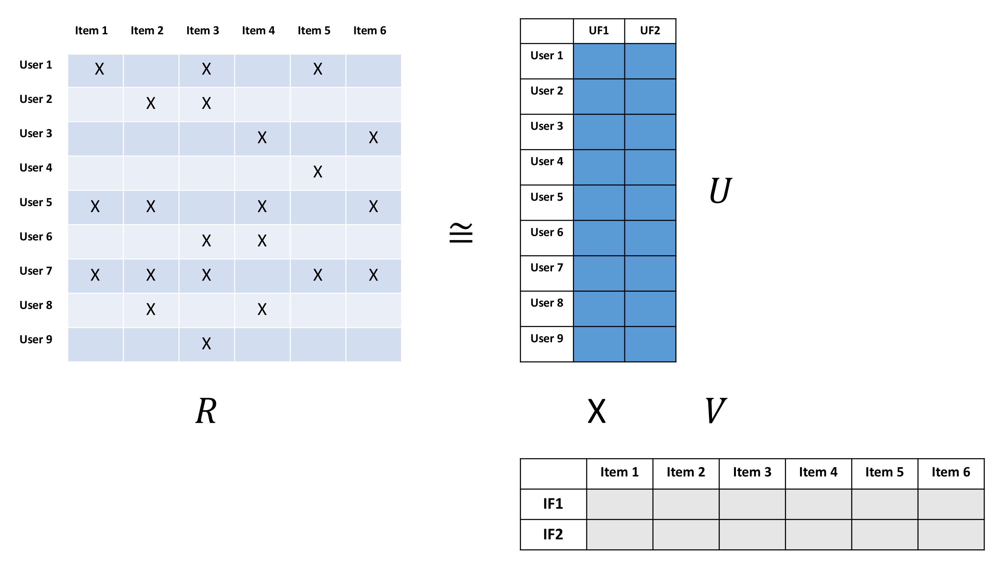
U와 V행렬을 풀기 위해서는 SVD를 사용하거나, 이를 근사한 ALS를 적용할 수 있습니다. SVD는 매우 큰 행렬의 역행렬을 구해야하기 때문에 컴퓨터 연산이 복잡한 반면,
ALS는 한 번에 한 특징 벡터 (feature vector)만 추출하기만 하면 되기 때문에 병렬적으로 빠르게 처리할 수 있습니다. 그렇기 때문에 스파크에서 이 방법을 사용한 큰 이유라 생각합니다. ALS 방법은 다음과 같습니다.
예시는 "Online Retail"라 불리는 데이터 셋으로, UCI Machine Learning repository에서 가져왔습니다 (여기에서 해당 데이터를 찾을 수 있습니다). 이 데이터는 영국에 있는 온라인 소매 기업의 8개월 간의 구매 기록을 담고 있습니다.
먼저 필요한 라이브러리를 불러오고 데이터를 로드하겠습니다.
1 2 3 4 5 6 7 8 9 10 11
import pandas as pd import scipy.sparse as sparse import numpy as np from scipy.sparse.linalg import spsolve import random import implicit from sklearn.preprocessing import MinMaxScaler
해당 데이터는 구매 목록에 대한 송장 번호 (InvoiceNo), 아이템 ID (StockCode), 아이템에 대한 설명 (Description), 구매량 (Quantity), 구매 일자 (InvoiceDate), 아이템 가격 (UnitPrice), 고객 ID (CustomerID), 고객의 국적 (Country) 컬럼으로 이루어져 있습니다.
데이터 전처리
먼저, 결측치가 있는지 확인하겠습니다.
1
retail_data.info
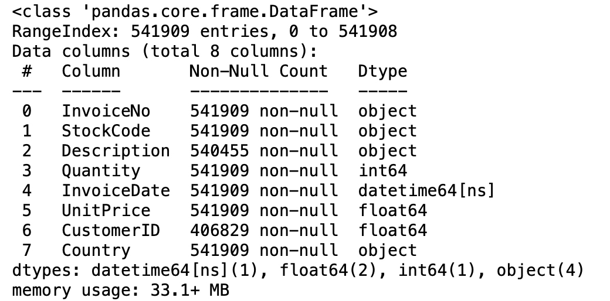
대부분의 컬럼에는 결측치가 없지만 CustomerID에 결측치가 좀 있군요. CustomerID가 결측이면 누가 어떤 항목을 샀는지 모르기 때문에 결측치를 제거해야 합니다.
1 2 3
# 1. CustomerID가 NA인 것을 지워줌 cleaned_retail = retail_data[retail_data['CustomerID'].notna()] cleaned_retail.info() # 총 406,829행
결측을 제거하니 406,829행이 되었습니다.
다음은 아이템 ID에 따른 아이템 설명 테이블 item_lookup을 만듭니다. 이 테이블은 이후에 추천한 아이템이 어떤 아이템이고, 고객이 어떤 아이템을 구매한 건지 파악하기 위해 필요합니다.
ALS 알고리즘의 입력값 형태를 만드려면 데이터를 변형해야 합니다. 유니크한 고객 ID를 행렬의 행으로, 유니크한 아이템 ID를 행렬의 열로 만듭니다. 행렬의 값은 각 유저가 각 아이템을 구매한 총 횟수입니다. 이런 행렬을 **희소 행렬 (Sparse Matrix)**라 합니다.
1 2 3 4 5 6 7 8 9 10 11 12 13 14 15 16
# matrix가 매우 크기 때문에 Sparse matrix로 바꾸어주어서 # zero가 아닌 값들의 위치와 그 값만 저장하도록 메모리 절약! cleaned_retail['CustomerID'] = cleaned_retail['CustomerID'].astype(int) # 1. 고객 ID, 아이템 ID, 구매량만 가져옴 cleaned_retail = cleaned_retail[['CustomerID','StockCode','Quantity']]
# 2. 고객과 아이템 별로 총 얼마나 구매했는지 grouped_cleaned = cleaned_retail.groupby(['CustomerID','StockCode']).sum().reset_index()
# 3. 구매 수량 (Quantity)가 0인 데이터는 고객이 구매했으나 환불한 경우이기 때문에 구매 카운트로 쳐줘서 1로 바꿔줌 grouped_cleaned[grouped_cleaned['Quantity']==0] = 1
purchase_sparse 행렬은 4,327명의 고객과 3,650개의 아이템으로 이루어져 있습니다. 이런 유저/ 아이템 간 상호작용은 265,221개에 달합니다. 이렇게 만든 희소 행렬이 얼마나 비었는지 보기 위해 희소성 (Sparsity)를 계산할 수 있습니다. 희소성은 행렬에 얼마나 0 값이 많은지를 보여줍니다.
상호작용 행렬의 98.3%이 비어있습니다. 협업 필터링을 구축하기 위해서 필요한 희소성은 약 99.5%까지 가능합니다. 저희가 구한 희소행렬은 98.3%이니까 협업 필터링을 무난하게 구축할 수 있습니다.
Train, Validation 세트 만들기
일반적인 머신러닝에서는 훈련 데이터로 만든 모형이 얼마나 새로운 데이터에 잘 작동하는지 테스트해야 합니다. 훈련 데이터로부터 테스트 데이터를 따로 만들어서 할 수 있죠.
그러나 협업 필터링에서는 적절한 행렬 분해 (matrix factorization)을 하기 위해서 모든 유저/아이템 상호작용 데이터를 사용해야 합니다. 결과적으로 모형을 훈련시킬 때 일정한 확률로 랜덤하게 뽑힌 유저/아이템 상호작용을 숨겨야 합니다. 이후, 테스트 단계에서는 얼마나 유저가 실제로 추천된 아이템을 구매했는지 파악할 수 있습니다. 이상적으로는 A/B 테스트를 통해 추천 효과를 검증할 수 있습니다.
그럼 어떻게 일정한 확률로 데이터를 숨길 수 있을까요?
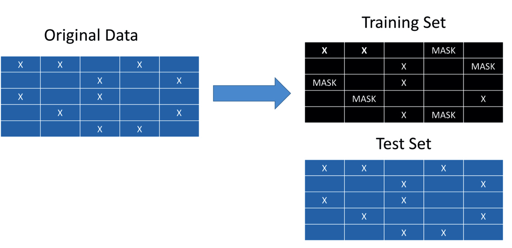
훈련 데이터는 랜덤하게 일정한 확률로유저/아이템 상호작용 몇 개를 가려 고객이 그 아이템을 구매한 적이 없는 것처럼 만듭니다 (= 몇 개의 구매 수량을 0으로 채워넣습니다). 그리고 테스트 데이터는 원본 데이터에서 구매한 이력이 있으면 1, 없으면 0으로 채운 행렬입니다. 이런 방식으로 데이터를 세팅하면, 테스트 데이터에서 얼마나 유저가 실제 구매한 아이템이 추천됐는지 파악할 수 있습니다. 만약 유저가 추천된 아이템을 실제 구매한 경우가 많을 경우 추천 시스템이 제대로 작동한다 말할 수 있겠죠.
defmake_train (matrix, percentage = .2): ''' ----------------------------------------------------- 설명 유저-아이템 행렬 (matrix)에서 1. 0 이상의 값을 가지면 1의 값을 갖도록 binary하게 테스트 데이터를 만들고 2. 훈련 데이터는 원본 행렬에서 percentage 비율만큼 0으로 바뀜 ----------------------------------------------------- 반환 training_set: 훈련 데이터에서 percentage 비율만큼 0으로 바뀐 행렬 test_set: 원본 유저-아이템 행렬의 복사본 user_inds: 훈련 데이터에서 0으로 바뀐 유저의 index ''' test_set = matrix.copy() test_set[test_set !=0] = 1# binary하게 만들기 training_set = matrix.copy() nonzero_inds = training_set.nonzero() nonzero_pairs = list(zip(nonzero_inds[0], nonzero_inds[1])) random.seed(0) num_samples = int(np.ceil(percentage * len(nonzero_pairs))) samples = random.sample (nonzero_pairs, num_samples) user_inds = [index[0] for index in samples] item_inds = [index[1] for index in samples] training_set[user_inds, item_inds] = 0 training_set.eliminate_zeros() return training_set, test_set, list(set(user_inds))
# 훈련, 테스트 데이터 생성 product_train, product_test, product_users_altered = make_train(purchase_sparse, 0.2)
이제 Hu, Koren, Volinsky의 논문에서 쓰인 ALS (Alternating Least Squares)를 구현해보겠습니다.
훨씬 빠르게 모형이 적합됨을 확인할 수 있었습니다. 이제 모든 유저와 아이템에 대한 평점이 계산됐습니다. 그러면 어떻게 이 모형이 잘 적합됐는지 알까요?
추천 시스템 평가하기
훈련 데이터 중 20%는 가려졌다는 사실을 기억하시나요? 이를 이용해서 추천 시스템의 성능을 평가할 것입니다. 결과적으로 유저마다 예측 평점이 높은 아이템 (추천할 아이템)이 실제로 구매한 아이템인지를 보아야 합니다. 흔히 쓰이는 지표는 ROC 커브입니다. ROC 커브 밑에 차지하는 면적이 넓을수록 추천할 아이템과 실제 구매한 아이템이 비슷함을 의미합니다. 이 면적을 AUC (Area Under the Curve)라 부릅니다.
이를 위해서 가려진 정보가 있는 아이템을 가진 유저마다 AUC를 구하는 함수가 필요합니다. 또한 추천 시스템과 비교하기 위해서 가장 인기있는 아이템을 기반으로 추천했을 때 AUC는 어떤지도 계산할 것입니다.
1 2 3 4 5 6 7 8
from sklearn import metrics
defauc_score (test, predictions): ''' fpr, tpr를 이용해서 AUC를 계산하는 함수 ''' fpr, tpr, thresholds = metrics.roc_curve(test, predictions) return metrics.auc(fpr,tpr)
자 이제 이 auc_score함수를 helper 함수로 써서 가려진 유저들의 AUC를 계산할 것입니다.
defcalc_mean_auc(training_set, altered_users, predictions, test_set): ''' 가려진 정보가 있는 유저마다 AUC 평균을 구하는 함수 ---------------------------------------- input 1. training_set: make_train 함수에서 만들어진 훈련 데이터 (일정 비율로 아이템 구매량이 0으로 가려진 데이터) 2. prediction: implicit MF에서 나온 유저/아이템 별로 나온 예측 평점 행렬 3. altered_users: make_train 함수에서 아이템 구매량이 0으로 가려진 유저 4. test_set: make_train함수에서 만든 테스트 데이터 ---------------------------------------- 반환 추천 시스템 유저의 평균 auc 인기아이템 기반 유저 평균 auc ''' # 리스트 초기화 store_auc = [] popularity_auc = [] pop_items = np.array(test_set.sum(axis = 0)).reshape(-1) # 모든 유저의 아이템별 구매횟수 합 item_vecs = predictions[1] # 아이템 latent 벡터 for user in altered_users: training_row = training_set[user,:].toarray().reshape(-1) # 유저의 훈련데이터 zero_inds = np.where(training_row == 0) # 가려진 아이템 Index # 가려진 아이템에 대한 예측 user_vec = predictions[0][user,:] pred = user_vec.dot(item_vecs).toarray()[0,zero_inds].reshape(-1) # 가려진 아이템에 대한 실제값 actual = test_set[user,:].toarray()[0,zero_inds].reshape(-1) # 가려진 아이템에 대한 popularity (구매횟수 합) pop = pop_items[zero_inds] # AUC 계산 store_auc.append(auc_score(actual, pred)) popularity_auc.append(auc_score(actual,pop)) returnfloat('%.3f'%np.mean(store_auc)), float('%.3f'%np.mean(popularity_auc))
1
(0.869, 0.814)
위의 코드 결과를 통해 우리의 추천 시스템이 가장 인기있는 아이템 기반 알고리즘보다 나은 성능을 낸다는 것을 알았습니다. ALS 기반 추천 시스템은 평균 0.87의 AUC를 갖는 반면, 인기있는 아이템 기반 알고리즘은 그보다 낮은 0.814의 AUC를 갖습니다. 위에서 정한 모수들을 바꿔가면서 더 높은 AUC를 가질 수 있는지 조정할 수 있습니다. 이상적으로는 교차 검증을 통해서 어떤 모수가 가장 좋은지 파악할 수 있습니다.
추천하기
인기 기반 추천보다 ALS 기반 추천이 더 나은 성능을 낸다는 것을 알았습니다. 이제 어떻게 특정한 유저에게 추천이 되는지 확인해봅시다.
먼저, 훈련 데이터에서 유저가 이미 구매한 아이템이 무엇인지 파악해야 합니다. get_items_purchased 함수는 특정 유저가 구매한 목록을 보여줍니다.
1 2 3 4 5 6 7 8 9 10 11 12 13 14 15 16
defget_items_purchased(customer_id, mf_train, customer_list, products_list, item_lookup): ''' 특정 유저가 구매한 목록을 보여주는 함수 ---------------------------------------- INPUT 1. customer_id: 고객 ID 2. mf_train: 훈련 데이터 평점 3. customers_list: 훈련 데이터에 쓰인 고객 목록 4. products_list: 훈련 데이터에 쓰인 아이템 목록 5. item_lookup: 유니크한 아이템 ID와 설명을 담은 테이블 ''' cust_ind = np.where (customer_list == customer_id)[0][0] purchased_ind = mf_train[cust_ind,:].nonzero()[1] prod_codes = products_list[purchased_ind] return item_lookup.loc[item_lookup.StockCode.isin(prod_codes)]
defrec_items(customer_id, mf_train, user_vecs, item_vecs, customer_list, item_list, item_lookup, num_items = 10): ''' 유저의 추천 아이템 반환 ----------------------------------------------------- INPUT 1. customer_id - Input the customer's id number that you want to get recommendations for 2. mf_train: 훈련 데이터 3. user_vecs: 행렬 분해에 쓰인 유저 벡터 4. item_vecs: 행렬 분해에 쓰인 아이템 벡터 5. customer_list: 평점 행렬의 행에 해당하는 고객 ID 6. item_list: 평점 행렬의 열에 해당하는 아이템 ID 7. item_lookup: 아이템 ID와 설명을 담은 테이블 8. num_items: 추천할 아이템 개수 ----------------------------------------------------- 반환 구매한 적이 없는 아이템 중 예측 평점이 높은 최고 n개의 추천 아이템 ''' cust_ind = np.where(customer_list == customer_id)[0][0] pref_vec = mf_train[cust_ind,:].toarray() # 훈련 데이터의 실제 평점 pref_vec = pref_vec.reshape(-1) + 1# 1을 더해서 환불한 것도 구매한 걸로 간주 pref_vec[pref_vec > 1] = 0# 구매한 것들을 모두 0으로 rec_vector = user_vecs[cust_ind,:].dot(item_vecs.T) # 추천 시스템에 기반한 예측 평점 # Min-Max Scaling min_max = MinMaxScaler() rec_vector_scaled = min_max.fit_transform(rec_vector.reshape(-1,1))[:,0] recommend_vector = pref_vec*rec_vector_scaled # 구매하지 않은 아이템에 대해서만 예측 평점이 남도록 product_idx = np.argsort(recommend_vector)[::-1][:num_items] # num_items만큼 내림차순으로 평점 정렬한 index rec_list = [] for index in product_idx: code = item_list[index] # 아이템 id # id와 description 담기 rec_list.append([code, item_lookup['Description'].loc[item_lookup['StockCode'] == code].iloc[0]]) codes = [item[0] for item in rec_list] descriptions = [item[1] for item in rec_list] final_frame = pd.DataFrame({'StockCode': codes, 'Description': descriptions}) return final_frame[['StockCode', 'Description']]
예를 들어 고객 ID가 12363인 유저의 실제 구매목록과 추천된 아이템을 비교하면 다음과 같습니다.
실제 구매 목록: 식기 세트, 종이 접시, 물병 가방, 크리스마스 관련 물품, 캔들, 열쇠고리 등
이 둘을 비교해보면 12361 id를 가진 유저는 식기 세트 (cutlery set)를 많이 구매했는데, 추천 목록에서는 아직 구매하지 않은 핑크색, 빨간색 식기 세트를 추천하고 있습니다. 또한 가족 앨범을 위한 사진틀이 1순위로 추천됐는데 아마도 해당 유저가 구매한 아이템들이 가족을 가진 아내들이 많이 사는 아이템이지 않을까 싶습니다. 이렇게 추천 시스템이 보기에도 알맞게 추천되고 있음을 확인할 수 있습니다.
이 글에서는 어떻게 암시적 피드백 데이터에서 추천 시스템이 작동하는지를 배웠습니다. 전체 코드는 여기에서 확인하실 수 있습니다.
다음 글에서는 LightFM이라 불리는 파이썬 라이브러리를 이용한 추천 시스템에 대해 파보려 합니다 :>
References
Jesse Steinweg-Woods, “A Gentle Introduction to Recommender Systems with Implicit Feedback” [link]
Hu, Koren, and Volinsky, “Collaborative Filtering for Implicit Feedback Datasets” [link]
기다리고 기다리던 글또를 또!하게 되었습니다. 4기 때부터 시작했던 글또는 "올해 가장 잘한 일"이라 칭할 수 있을 정도로 값진 활동이라 생각합니다. 왜냐하면
항상 꿈꾸기만 하고 실천하지 못했던 지속적인 블로깅을 할 수 있었고
다른 분들의 글들을 보고 배우고, 제 글에 대한 피드백을 통해 글을 더 체계적으로 쓰는 법에 대해 익힐 수 있었기 때문입니다.
이 외에도 글또의 도움을 받은 것이 많아 너무 감사했습니다. 글또에서 취업 컨설팅을 받으면서 제가 좋아하고 잘하는 것에 대해 깊게 고민해보고, 취준생이라면 한 번쯤 느낄 만한 조급함, 불안함을 많이 떨쳐낼 수 있었습니다. 다른 분들의 조언과 격려를 받으면서 힘든 시기를 잘 겪은 덕분에 지금은 게임 회사에서 5개월 째 분석가로 일하고 있습니다. 제 히스토리가 궁금하시다면 4기 때 첫 다짐글과 4기가 끝날 때쯤 소감글을 보면 좋을 것 같습니다 :>
4기 때 무슨 글을 썼나?
4기 때 활동하며 A/B 테스트, 이상탐지, AWS, 인과관계 추론, 나무 모형을 주제로 글을 썼습니다. 다음은 제가 글또에서 활동할 동안 쓴 글 리스트입니다 (제출하지 않은 글 포함)
- Bayesian AB Test - NDC 후기: 실전에서 사용하는 A/B 테스트 - Introduction to Deep Anomaly Detection - AWS EC2 가상 서버 접속하기 - AWS Scalability & Elastic Load Balancer (ELB) 이해하기 - AWS EC2 인스턴스에서 Python, Jupyter Notebook 설치하기 - Abusing Detection in Online Games [1]- Game Bot Detection with Machine Learning - AWS EC2 인스턴스에 고정 IP (Elastic IP) 연결하기 - 2020년 1/4분기 회고 - Python boto3으로 AWS S3 버킷 생성 및 파일 올리기 - NDC 후기: 매칭시스템 - Introduction to Bayesian Causal Inference - VS Code :hearts: Shortcuts and Snippets - AWS EC2 (Linux Ubuntu)에서 crontab으로 Python 코드 자동화하기 - Python brawlstats으로 브롤 스타즈 전투 기록 수집하기 - Matching and Stratification in Causal Inference - 머신러닝을 이용한 인과관계 추론 (feat. Metalearners) - 2020년 상반기 회고 & 하반기 계획 - 편리한 맥북 사용을 위한 단축키 - 배깅 (Bagging)과 부스팅 (Boosting)의 원리 - AdaBoost에 대한 자세한 설명 - API (Application Programming Interface), 그게 뭔가요? - GBM (Gradient Boosting Machines)에 대한 자세한 설명 (1): Regression - 그 외 코딩 테스트 (백준, 프로그래머스) 글들
당시에 취업 준비를 하고 있어서 필수로 제출해야 하는 글보다 더 많은 글들을 썼지만, 지금 와서 보면 아쉬운 점들이 많습니다.
글이 너무 긴 게 많다
글의 통일성이 없다
제목이 직관적이지 않다
는 점이 가장 크리티컬하다는 생각이 듭니다.
5기 때는 더 발전된 모습으로
따라서 4기 때의 경험을 바탕으로 5기에서 더 발전된 모습으로 글을 쓰고자 합니다.
글을 너무 길게 쓰지 말자.
어떤 글은 7천 자가 넘는 반면 어떤 글은 2천 자 내외로 글 길이가 들쭉날쭉합니다. 7천 자가 넘는 글들을 읽어보면 너무 많은 내용을 꾸겨놓은 듯한 느낌을 받습니다 (예시: 9천 자가 넘는 글). 이런 글을 글또에 공유하면, 다른 분들도 읽기가 쉽지 않기 때문에 깊이 있는 피드백을 받기가 어려움을 깨달았습니다. 따라서, 5기 때는 공부한 내용을 쉽게 풀어내는 글을 6천 자 내외로 쓰는 것이 목표입니다.
시리즈 글은 완성하자.
이상탐지와 GBM 글은 1탄에서 끝낸 시리즈 글입니다 (…) 이런 외톨이성 글이 더 이상 없도록 시리즈 성 글을 쓸 때는 시리즈를 완결낼 각오로 쓰고자 합니다.
변명을 해보자면 시리즈 성 글은 쓰다가 질립니다. 다른 주제로 또 글을 쓰고 싶어서 글을 쓰고, 시리즈로 다시 안 돌아오는 경우가 많아서 1탄에서 끝내버렸습니다.
이제 이런 일이 없으려면 억지로라도 시리즈 성 글을 완성시키면 될텐데…다른 분들은 어떻게 하는지 궁금합니다. (피드백으로 알려주시면 감사할 것 같네요!)
영어 제목을 지양하자.
무슨 멋으로 영어 제목을 썼는지는 모르겠지만… 처음엔 컨셉이었습니다. 공부 내용이 대부분 영어로 되어있는게 많았기 때문에 "번역을 하면 어색할꺼야!"라는 생각에 영어로 그대로 제목을 쓰곤 했습니다.
그러나 이 문제는 차츰 드러났습니다. 일단 Google Analytics에서 통계를 보면 미국에서 클릭한 경우가 다수 있었습니다. 당연히 클릭만 하고 읽지 못하기 때문에 나갔겠죠. 본의 아니게 낚시성 글을 쓰게 된 것 같아 죄송했습니다. 반대로 한국어로 쓴 제목 글에 비해 한국 국가에서의 클릭 수가 적었습니다. 따라서 5기 때부턴 영어 제목을 지양하고, 별다른 번역이 없을 경우에만 영어와 한국어를 병기하고자 합니다.
아아-! 오랜만에 글을 쓰니 또 재밌습니다. 초심을 잃지 않고 글또 5기도 잘 달려보겠습니다. 빠샤!
GBM은 LightGBM, CatBoost, XGBoost가 기반하고 있는 알고리즘이기 때문에 해당 원리를 아는 것이 중요합니다.
이 포스팅은 GBM 중 Regression에 초점을 두어 설명했습니다!
Introduction
Gradient Boosting Machines (GBM)은 Boosting의 개념을 Gradient descent라는 최적화 방법으로 이해하는 방법입니다.
부스팅은 이전 포스팅에서도 설명했지만 additive하고 sequential하게 여러 나무를 학습해 결과를 종합하는 방식입니다. ("additive하고 sequential하게"라는 말이 "fun하고 cool하게"처럼 느껴질 수도…)
"additive하다"는 말은 다음과 같이 여러 나무들의 예측결과를 학습한다는 것을 의미합니다.
F(xi)=t=1∑Tft(xi)
여기서 ft(xi)는 xi를 입력값으로 넣었을 때 t번째 약한 학습기가 예측한 결과를 의미하고, 결국 F(xi)는 T개의 ft(xi)를 합친 yi의 예측값을 의미합니다.
그리고 "sequential하다"는 말은 이 T개의 나무를 동시에 학습하는 것이 아니라 한 나무가 학습된 결과를 바탕으로 더 나은 결과를 위해 다시 두 번째 나무를 학습하고, 이 두 나무들보다 나은 결과를 위해 세 번째 나무를 학습하는 등 순서대로 학습한다는 의미를 내포합니다.
AdaBoost vs. GBM
그럼, GBM은 어떻게 약한 학습기로 "더 나은 결과"를 만들까요?
이를 쉽게 이해하기 위해서 AdaBoost와 비교하겠습니다.
GBM은 AdaBoost와 마찬가지로 Boosting 계열의 알고리즘이기 때문에 순차적으로 약한 학습기 (weak learner)를 만들어 가며 이전 학습기의 잔차 (resuidual)를 보완하는 방식입니다.
그러나, 이 둘은 잔차를 보완하는 방법이 다릅니다.
AdaBoost는 이전에 잘못 분류한 데이터에 가중치를 더 많이 주고, 잘 분류한 학습기에 더 많은 가중치를 주어 해결합니다. AdaBoost의 최종 모형인
F(x)=sign(t=1∑Tαtft(x))
에서 알 수 있듯이 αt로 학습기마다 가중치를 다르게 주고, 각 데이터에도 잘못 분류되면 가중치가 커지도록 adaptive하게 잔차를 보완합니다.
이에 비해 GBM은 약한 학습기를 잔차 자체에 적합하고, 이전의 예측값에 예측한 잔차를 더해 주어 예측값을 새로이 업데이트하는 방식입니다.
GBM을 간략하게 설명하면 다음과 같습니다.
yi,i=1,…,n에 대한 초기 예측값으로 yi값들의 평균인 y를 택합니다.
t=1,…,T만큼 반복
각 관측치마다 잔차 yi−Ft(x)를 구하고, 이 잔차에 첫 번째 약한 학습기를 적합시킵니다.
적합된 결과에 따라 잔차의 예측값 (= 마지막 노드 (leaf)에 속한 잔차들의 평균)을 구하고
잔차 예측값 * 학습률을 이전 예측값과 더해 새롭게 예측값을 업데이트합니다.
이 설명만 보면 gradient descent가 “왜 혹은 어떻게” 모델명에 붙었는지 알 수가 없습니다. 따라서, gradient descent에 대해 먼저 알아보고, 왜 이게 GBM과 관련이 있는지 설명하고자 합니다.
Gradient Descent란?
그럼 gradient descent가 무엇인지 알아봅시다.
Gradient descent를 한국말로 풀면 경사 하강법입니다.
경사하강법은 미분 가능한 convex한 함수, 즉 y=x2과 같은 오목 함수에서 y가 최소값 갖게 하는 x를 찾기 위한 알고리즘입니다. (위의 그림에서는 x가 w로 표시돼 있네요!)
이를 위해 Gradient Descent는 함수의 기울기 혹은 경사 (gradient)를 구하여 기울기가 낮은 쪽으로 x값을 계속 이동시켜서 y가 극소값을 갖도록 반복합니다.
참고로
극소값은 local minimum으로 가장 작은 함수값이라 말할 순 없지만 주변에 비해 작은 값
최소값은 global minimum으로 전체 범위에서 가장 작은 함수값
라는 점에서 차이를 보입니다.
구체적인 Gradient Descent 알고리즘은 다음과 같습니다.
초기값 x0을 선택하고, 다음의 식을 반복적으로 실행해서 임의의 조건을 만족하면 종료하게 됩니다.
xt=xt−1−ηΔf(xt−1),t=1,2,...
이처럼 t번째 단계의 xt는 이전 단계의 값 xt−1에서 η와 Δf(xt−1)를 곱한 값을 빼주어 값을 지속적으로 업데이트합니다.
여기서 η는 학습률 (learning rate), 스텝의 크기 (step size)라 불리우는데, 한 번 업데이트할 때 얼마나 큰 크기로 업데이트할지 조정하는 값으로 사용자에 의해 지정되는 값입니다. 그리고 Δf(xt−1)이 바로 기울기 (gradient)에 해당합니다. 기울기는 함수를 1차 미분한 것과 같습니다.
즉 t번째 값의 xt는
기울기 > 0 이면 xt−1보다 더 작은 값으로 업데이트되고
기울기가 < 0 이면 xt−1보다 큰 값으로 업데이트됩니다.
기울기 = 0일 때 보통 극값을 갖기 때문에 기울기 > 0이면 x가 극소값보다 오른쪽에 있다는 뜻이므로 학습률 * 기울기만큼 빼주어 왼쪽으로 이동시켜주는 것이고, <0이면 극소값보다 왼쪽에 있다는 뜻이므로 학습률 * 기울기만큼 더해주어 오른쪽으로 이동시켜주는 원리입니다.
이를 무한 반복하는 것은 아니고 t번째 값인 xt와 t−1번째 값인 xt−1 번째 값이 거의 같으면 그 값이 수렴했음을 의미하기 때문에 반복을 멈춥니다.
예를 들어 f(x)=x4−3x3+2에서 극값을 찾기 위해 Gradient Descent를 구현해봅시다.
자, 그럼 여기서 gradient descent로 예측값 Ft(xi)을 업데이트해 MSE/2라는 손실함수를 최소화할 수 있다는 것을 알았습니다.
근데 위의 Introduction에서 분명 잔차에 약한 학습기를 적합시킨다 했는데 왜 굳이 잔차를 바로 구하지 않고 잔차를 예측해서 구할까요?
그 이유는 잔차는 데이터 포인트에서만 구할 수 있는 값인 반면, 약한 학습기에 잔차를 예측하게 되면 데이터 포인트 외의 모든 실수 범위에서 값을 구할 수 있기 때문입니다. 즉, n개의 데이터만 있으면 잔차인 yi−Ft−1(xi)도 n개만 존재하지만, 예측을 해서 구하면 어떤 xi값을 넣든 간에 예측된 잔차값을 알 수 있어 "generalization"이 가능해집니다.
GBM, 자세히 뜯어보자
그래서 Boosting의 개념은 어디로 간거죠?
gradient descent로 예측값을 업데이트할 수 있고, 잔차를 약한 학습기에 적합시키는 것까지 이해했습니다.
근데 sequential하게 나무를 적합하고 additive하게 그 예측결과를 합치는 Boosting의 개념은 아직 나오지 않았습니다.
네, 그래서 이제 위에서 간략히 설명한 GBM의 설명인
yi,i=1,…,n에 대한 초기 예측값으로 yi값들의 평균인 y를 택합니다.
t=1,…,T만큼 반복
각 관측치마다 잔차 yi−Ft(x)를 구하고, 이 잔차에 첫 번째 약한 학습기를 적합시킵니다.
적합된 결과에 따라 잔차의 예측값 (= 마지막 노드 (leaf)에 속한 잔차들의 평균)을 구하고
잔차 예측값 * 학습률을 이전 예측값과 더해 새롭게 예측값을 업데이트합니다.
을 다시 차근차근 수식과 함께 (^^) 알아보고자 합니다.
모형 초기화: F0(x)=y
t=1,…,T만큼 반복:
i번째 관측치의 t번째 잔차 계산
rit=−[∂F(xi)∂L(yi,F(xi))]F(x)=Ft−1(x)
rit,i=1,…,n에 대해 나무모형을 적합하고 마지막 노드인 Rjt (= terminal nodes, leaves)들에 대해서 잔차 예측값 γjt,j=1,…,Jt계산
t번째 예측값 계산
Ft(x)=Ft−1(x)+ηj=1∑JtγjtI(x∈Rjt)
여기서 Rjt는 t번째 나무의 j번째 마지막 노드를 의미합니다. t번째 나무의 마지막 노드의 개수는 Jt개입니다. 그리고 γjt는 이 마지막 노드들의 예측값을 의미합니다. 저희는 손실 함수를 MSE/2꼴로 두었기 때문에 이 예측값들은 해당 노드에 속한 잔차들의 평균이 됩니다.
마지막으로 y의 t번째 예측값인 Ft(x)는 t−1번째 예측값 Ft−1(x)에 학습률 * 잔차의 예측값을 더한 것과 같습니다.
손코딩으로 알아보는 GBM
쉬운 예시를 통해서 이 알고리즘을 이해해보겠습니다.
몸무게를 예측하기 위한 변수로 키, 좋아하는 색, 성별을 두었다 가정합시다. 좋아하는 색, 성별은 범주형이기 때문에 get_dummies를 통해 수치형으로 변환해줬습니다.
참고로 이 데이터는 [link]에서 착안해서 비슷하게 만들었는데요. 해당 링크에 굉장히 자세하게 GBM을 설명하고 있습니다. 강추! 합니다. (~~자꾸 BAAM! 하고 노래부르고 그러지만… 나름 교수님이시고 가스펠도 하시는 능력자님…~~ )
1 2 3 4 5 6 7 8 9 10
import numpy as np import pandas as pd from sklearn.tree import DecisionTreeRegressor
eta = 0.1 F1 = F0 + eta * gamma1 print ('첫번째 예측값:{}'.format(F1)) 첫번째 예측값:[65.763.4333333363.4333333365.760.363.43333333]
여기서 eta는 학습률, gamma1는 첫번째 잔차를 예측한 값, F1는 새로 예측된 y 값을 의미합니다. 예측값을 보면 예측 실력이 형편없죠. 이렇게 약한 학습기는 하나만으로는 좋은 예측 성능을 내지 못합니다.
이 과정을 내가 정한 반복수 T만큼 반복하면 다음과 같이 GBM을 구현할 수 있습니다.
1 2 3 4 5 6 7 8 9 10 11 12 13 14 15
F_new = np.mean(y) #초기화 모형 tree = DecisionTreeRegressor(random_state=433, max_depth =2) #약한 학습기 eta = 0.1#학습률
for t inrange(100): #T = 100 print(str(t+1)+'번째 업데이트') F_old = F_new r = y - F_old # 잔차 r_fit = tree.fit(x,r) # 잔차 적합 gamma = r_fit.predict(x) print('잔차 예측값:{}'.format(np.round(np.unique(gamma),2))) F_new = F_old + eta * gamma # 새로운 예측값 print('예측값:{}'.format(np.round(F_new,2)))
이렇게 초반의 업데이트 값들은 잔차도 매우 크게 예측되고, 예측값도 실제 몸무게 값과 많이 다르지만 뒤로 갈수록 잔차 예측값은 0에 가깝고, 예측값도 실제 몸무게 값과 비슷한 결과를 냅니다.
GBM in Python
당연히 GBM도 sklearn패키지에 구현되어 있습니다.
다음은
위의 몸무게 데이터를
GradientBoostingRegressor로 모형을 적합하고,
10-fold 교차 검증을 통해 MSE를 계산한 코드입니다.
1 2 3 4 5 6 7 8 9 10 11
from sklearn.ensemble import GradientBoostingRegressor from sklearn.model_selection import cross_val_score from sklearn.model_selection import RepeatedKFold
# evaluate the model model = GradientBoostingRegressor() cv = RepeatedKFold(n_splits=3, n_repeats=3, random_state=1) n_scores = cross_val_score(model, x, y, scoring='neg_mean_squared_error', cv=cv, n_jobs=-1, error_score='raise') print('MSE: %.3f (%.3f)' % (-mean(n_scores), std(n_scores)))
> MSE: 885.179 (530.951)
GBM에서 튜닝을 위한 중요한 하이퍼 파라미터는 다음과 같습니다.
loss: 경사 하강법에서 사용할 손실 함수를 지정합니다. default 는 'deviance’입니다.
learning_rate: GBM이 학습을 진행할 때마다 적용하는 학습률입니다. default는 0.1입니다. learning_rate는 너무 작은 값이나 큰 값이면 반복이 끝나도 최소 잔차값을 찾아내지 못할 수 있습니다. 따라서 learning_rate는 n_estimators와 상호보완적으로 조합해 사용합니다. learning_rate를 작게 하고, n_estimators를 크게하면 더 이상 성능이 좋아지지 않는 한계점까지는 예측성능이 조금씩 좋아질 수 있습니다. 그러나 수행 시간이 길어지고, 예측 성능도 역시 현격하게 좋아지지는 않습니다.
n_estimators: 약한 학습기의 개수입니다. 약한 학습기가 순차적으로 오류를 보정하므로 개수가 많을수록 예측 성능이 좋아집니다. default는 100입니다.
subsample: weak learner가 학습에 사용하는 데이터 샘플링 비율입니다. default은 1이며, 이는 전체 학습 데이터를 기반으로 학습한다는 의미입니다. 과적합이 염려되는 경우 subsample을 조정해 1보다 작은 값으로 설정합니다.
Open APIApplication Program Interface, RESTful API, SDKSoftware Development Kit… 한 번쯤 들어본 적이 있는 단어인데요.
제 경험을 비추어 볼 때
Open API를 이용해서 브롤스타즈 게임 로그 데이터를 수집해본 적이 있고
Python용 AWS SDK인 boto3을 이용해서 AWS S3에 연결해본 경험이 있고
회사에서도 API로 어떤 걸 요청하고 제대로 응답하는 지 확인하는 작업을 한 적이 있습니다.
이렇게 비개발자라도 데이터 분석을 하거나 업무 상에서 API를 들어본 적이 있는 분이라면 API가 무엇인지, 체계는 어떻게 되는지 알아야
어떤 방식으로 데이터를 가져오는지를 이해할 수 있습니다.
업무에서도 자꾸 API가 제대로 안 뜬다, 무엇이 문제다 이런 말들이 오고가서 이 기회에 제대로 이해해보자는 마음에 이 글을 포스팅하게 되었습니다.
API의 (사전적) 정의
APIApplication Programming Interface를 한국말로 번역하면 "응용 프로그램 프로그래밍 인터페이스"입니다.
무슨 말인지 하나도 모르겠죠. 그럴 때 우리는 위키신께서 내려주신 정의를 이해하고자 애씁니다.
위키피디아에 따르면 API는 다음과 같이 정의됩니다.
API(Application Programming Interface, 응용 프로그램 프로그래밍 인터페이스)는 응용 프로그램에서 사용할 수 있도록, 운영 체제나 프로그래밍 언어가 제공하는 기능을 제어할 수 있게 만든 인터페이스를 뜻한다. 주로 파일 제어, 창 제어, 화상 처리, 문자 제어 등을 위한 인터페이스를 제공한다.
음… 저는 책을 읽고도 이 말을 이해하지 못하겠네요. 역시 개발의 세계란 험난하기만 합니다.
더 쉬운 정의가 필요해보입니다.
API, 그래서 뭔데요 ㅜㅜ
API… 사전적 정의는 (어찌됐든) 알겠으나 전혀 이해가 안됩니다.
API는 어떤 두 매체를 연결해주는 체계이기 때문에 단독으로 알기 어렵습니다.
API를 이해하기 위해서는 먼저 클라이언트와 서버에 대해 이해해야 합니다.
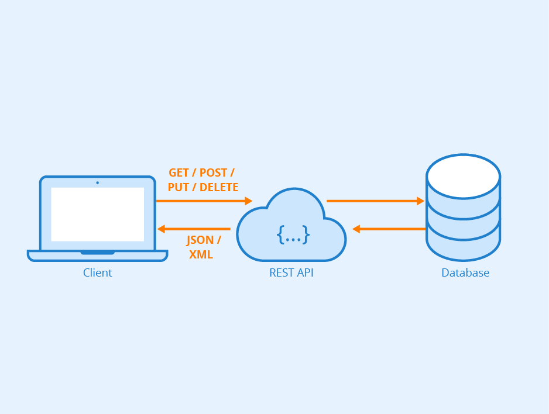
위의 그림에서 보듯이 Client에 해당하는 게 클라이언트 컴퓨터이고, Database에 해당하는 게 서버입니다.
그리고, 이를 연결해주는 체계가 바로 API입니다.
클라이언트는 웹 상에서 어떤 서비스를 **요청 (Request)**하는 컴퓨터를,
서버는 요청받은 서비스에 **응답 (Response)**하는 컴퓨터를 의미합니다.
예를 들어 네이버에 접속해서 로그인을 할 때
제 컴퓨터는 "로그인 시켜줘"라고 요청하는 클라이언트 컴퓨터가 되고
이 요청을 받고 제 아이디와 비밀번호가 맞는지 확인 후 맞으면 로그인을 시켜주는 컴퓨터가 서버 컴퓨터가 됩니다.
근데 웹 상의 요청이 “로그인 시켜줘” 하나면 좋을텐데, 실상은 클라이언트는 매우 다양한 요청을 보냅니다.
회원가입 해줘
비밀번호 찾아줘
회사에 메일 보내줘
블로그 글 게시해줘
등 다양한 요청이 있는데, 이러한 요청들을 구분할 수 있도록 하는 체계가 바로 API입니다.
API는 "클라이언트에서 이 서버로 요청을 보내면 이런 응답을 주고, 저 서버로 요청을 보내면 저런 응답을 줄께"와 같이 규칙을 정해놓은 것을 의미합니다.
그리고 어떤 서버로 어떤 요청을 하는지 구분하기 위해서 서버주소/요청내용의 URL 형태로 요청합니다. 예를 들어 네이버 Open API에서 네이버 아이디로 로그인 인증을 요청하는 경우 https://nid.naver.com/oauth2.0/authorize로 요청합니다 (Open API에 대해서는 이후에 더 자세히 알아보겠습니다). 여기서 https://nid.naver.com/oauth2.0/가 서버주소, authorize가 요청 내용이 됩니다.
따라서, 클라이언트 컴퓨터가 https://nid.naver.com/oauth2.0/authorize로 신호를 보내면 서버에서 네이버 아이디로 로그인 인증을 수행하고 응답합니다. 잘 인증되었는지, 혹 문제가 있으면 어떤 문제가 있는지를 알려줍니다. 이러한 기능은 서버 개발자가 만들며, 그 결과물 (응답에 대한 결과)이 서버 프로그램입니다. 서버 주소 정의 역시 개발자 주도로 이루어집니다. 그리고 클라이언트 프로그램은 정해진 주소에 요청을 보냅니다.
따라서 API도 서버 개발자가 개발하고, 클라이언트 개발자는 그 API를 사용합니다.
참고로 API는 실체가 없습니다! 그냥 이 둘 간의 규칙을 Json 같은 언어로 문서화해놓았죠.
자, 그럼 이제 API를 클라이언트와 서버 관점에서 좀 더 자세히 살펴보겠습니다.
클라이언트 관점에서의 API
클라이언트에서 API를 요청할 때의 과정은 4가지 요소로 이루어져 있습니다.
CREATE
READ
UPDATE
DELETE
앞 글자만 따서 CRUD라고 불리는 이 요청은 데이터를 다룰 때 기준이 되는 요청으로, 매우 중요합니다.
예를 들어 회원 정보에 대한 CRUD를 생각한다면
CREATE: 회원 정보 만들어줘
READ: 회원 정보 읽어줘
UPDATE: 회원 정보 갱신해줘
DELETE: 회원 정보 삭제해줘
와 같은 요청을 할 수 있는 것이죠. 이러한 CRUD 요청은 각각의 주소를 가집니다.
예를 들어 회원 정보를 만드는 CREATE 요청을 서버주소/accountcreate라고 지을 수 있습니다.
그러나 요청마다 각기 다른 주소를 만든다면 관리하기도 어렵고 겹칠 수도 있기 때문에 좀 더 체계적인 API를 만들기 위해
REST(Representational State Transfer)한 API 즉, RESTful API라는 공식 체계가 만들어집니다.
RESTful API는 CRUD를 한 주소로 관리하고, 요청을 보낼 때 다음의 4가지 메소드 (method)를 이용합니다.
CREATE는 POST 메소드를 통해
READ는 GET 메소드를 통해
UPDATE는 전체 갱신이면 PUT, 일부 갱신이면 PATCH 메소드를 통해
DELETE는 그대로 DELETE 메소드를 통해
요청할 수 있습니다.
여기서 **메소드 (Method)**라는 용어는 함수처럼 어떤 요청을 보내면 특정 결과가 나오는 API의 모습에서 착안해 만들어졌다 합니다.
위의 예에서 회원 정보에 들어가는 ID, 비밀번호를 함수의 parameter로 넣으면
마치 POST(ID, 비밀번호)는 회원 정보를 갱신해주는 요청을 하게 되는 것이죠.
그래서 RESTful API는 서버주소/accountcreate대신 서버주소/account만 URL로 입력하고, POST 메소드를 사용해 회원정보를 생성하는 요청을 하게 됩니다.
서버 관점에서의 API
이제 요청을 받은 걸 서버에서 처리할 때 크게 두 가지 응답이 있을 수 있습니다.
요청이 잘 됐으니 요청을 처리했다는 응답
요청이 이상하니 확인해달라는 응답
회원 정보를 생성하는 요청을 보낼 경우, 모든 응답이 “그래!” 일 수는 없습니다.
기존 회원 정보에 없는 회원이라면 회원 정보를 잘 생성해줬다는 응답을 주겠지만
기존 회원 정보에 있는 회원이라면 이미 있는 회원이기 때문에 생성할 수 없다는 응답을 주어야 합니다.
혹은 서버 오류로 확인할 수 없는 경우라면 서버 오류로 확인할 수 없다는 응답을 주어야 합니다.
이런 응답도 요청처럼 체계적으로 관리하기 위해 숫자를 통해 응답을 표현합니다.
200번대 코드 (201, 202,…)는 잘 됐다
400번대 코드 (401, 404,…)는 클라이언트 요청 상의 오류
500번대 코드 (500, 501,…)는 서버 응답 상의 오류
를 의미합니다.
아래처럼 흔히 볼 수 있는 404 에러도 이런 응답의 한 종류입니다.
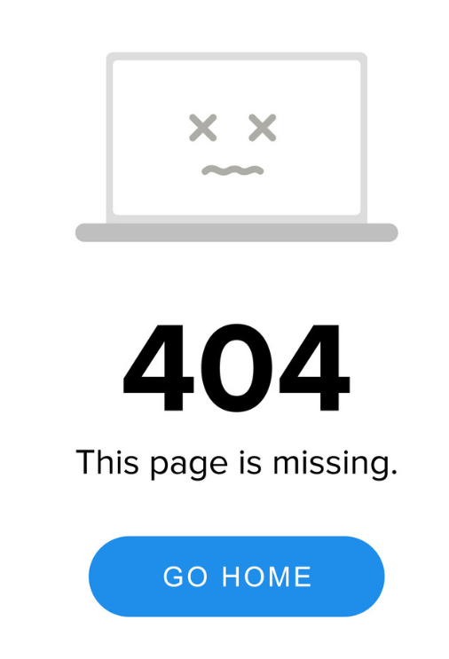
이처럼 API를 클라이언트 관점과 서버 관점에서 살펴봤습니다.
결과적으로 API를 더 쉽게 정의하자면 다음과 같습니다.
클라이언트가 특정 기능을 이용하기 위해 어떤 주소로 요청을 보내면 서버가 응답을 해주는 체계
클라이언트와 서버의 체계를 이해한다면 API도 이해됐으리라 믿습니다. ㅎㅎ
그럼 Open API는요…? SDK는요…?
Open API는 이런 API를 일반 사람들이 쓸 수 있게 공개해놓은 API입니다. 즉, 서버가 제공하는 다양한 기능을 당사가 아닌 다른 기업, 유저들이 이용할 수 있도록 하는 것입니다.
예를 들어, 대부분의 쇼핑몰에는 네이버 아이디로 가입과 네이버 아이디로 로그인버튼이 있습니다.
(TMI. 이를 네이버에서는 네아로서비스라고 부르네요 ㅋㅋㅋ 귀엽습니다)
이렇게 네이버 서버에 있는 정보를 이용해서 다른 쇼핑몰도 사용할 수 있도록 API 문서를 공개해놓은 것이 Open API입니다.
네이버는 이런 여러 기능들을 다른 사람들도 쓸 수 있도록 개발가이드, API 명세, 튜토리얼 등을 정리해 Naver Developers에 올려놓았습니다.
네이버 뿐만 아니라 카카오, 구글, 공공기관에서도 (심지어 브롤 스타즈)에서도 무료로 기능을 이용할 수 있도록 API를 공개해놓았습니다.
마지막으로, SDKSoftware Development Kit는 API를 제공하는 다른 소프트웨어를 의미합니다.
앞서 API는 클라이언트와 서버 간의 요청과 응답을 처리하는 체계라 말씀드렸는데, 이를 더 확장해서 소프트웨어 간의 체계도 API에 해당합니다.
예를 들어, 내 소프트웨어는 지하철 노선도 어플인데 지도 버튼을 누르면 해당 역의 구글 지도가 나오게 하는 기능을 추가하고 싶다 가정합시다.
내 소프트웨어에는 구글지도를 직접 탑재할 수 없기 때문에 구글에서 만든 소프트웨어를 이용해 구글 지도 SDK를 이용하면 내 소프트웨어에 구글 지도 기능을 넣을 수 있습니다. 이 SDK에서 제공해주는 API를 통해 구글 지도에 요청을 보내고 응답을 받을 수 있습니다.
이렇게 이번 포스팅에서는 API, 클라이언트와 서버, Open API, SDK에 대해 알아보았습니다.
비개발자이지만 업무에 항상 쓰이는만큼 자세하게 알아두는 게 좋을 것 같습니다.